James Tissot, Too Early, 1873, huile sur toile, Guildhall Art Gallery, Londres. Domaine public.
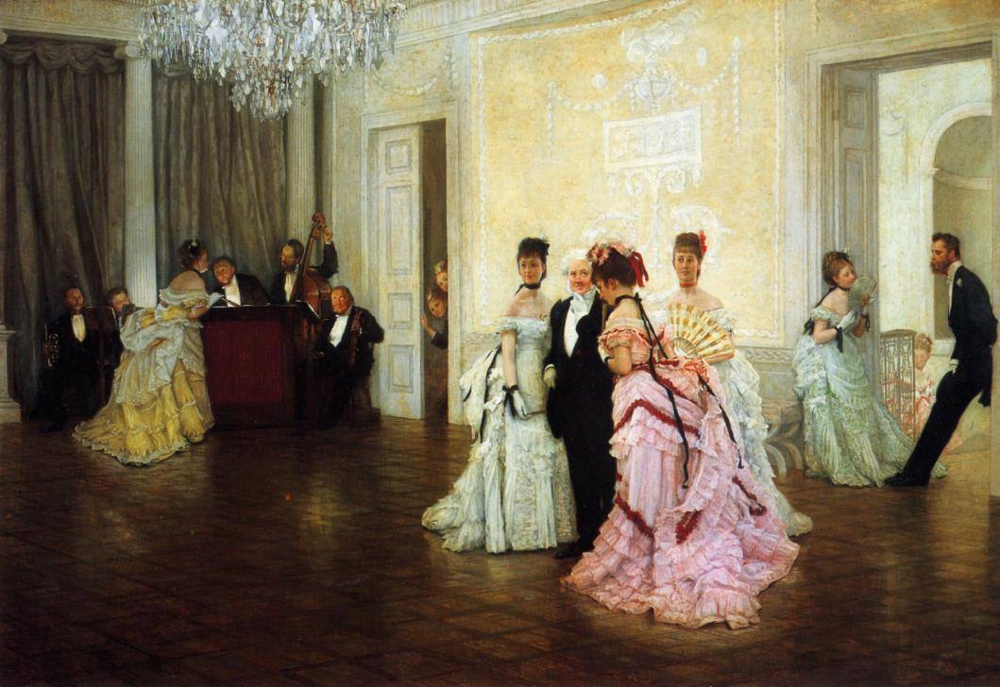
Lettres · Seconde · Lycée général et technologique
Ils vécurent malheureux et eurent beaucoup de dettes
Le XIXe siècle contre les contes de fées : détournements, spirale de Gorse inversée et physique des récits
Dernière séquence du Grand Tour. La classe de Seconde 4 et ses élèves sont inventés : aucun élève réel n’est nommé.
Encadré d’ouverture
Objectifs : Lire des extraits exacts de Maupassant, Flaubert, Zola, Balzac et Dumas fils ; comparer chaque récit au schéma d’un conte de Perrault ; tracer, pour chaque œuvre, une Spirale de Gorse en cinq tours ; distinguer la spirale centripète du conte et la spirale centrifuge du roman du XIXe siècle ; préparer un commentaire guidé et une écriture d’appropriation.
Niveau : Seconde
Méthode : Spirale de Gorse et physique des récits, séances minutées de 55 minutes (52 minutes de travail, les minutes 52 à 55 sont gardées comme marge de sécurité), tableaux à onglets au tableau numérique, mises en route écrites en rouge, traces écrites, devoirs, Plan B, évaluations écrite et orale.
En contexte
Lire, comparer, modéliser, commenter
Montrer comment un romancier du XIXe siècle retourne un conte, puis écrire une Spirale de Gorse qui aboutit à une thèse et à sa limite.
Objet d’étude
Le roman et le récit du XVIIIe au XXIe siècle.
Cette séquence s’adresse à la Seconde, lycée général et technologique. Elle se place au mieux entre février et mai : à ce moment de l’année, les élèves maîtrisent déjà les bases de l’analyse linéaire et du commentaire, ce qui permet d’aborder le réalisme et le naturalisme avec cet angle.
Thème
Les romans réalistes et naturalistes du XIXe siècle comme contes retournés : de la promesse « Ils vécurent heureux… » à la gravité du déterminisme social et financier.
Question
Comment les écrivains réalistes et naturalistes du XIXe siècle s’emparent-ils des schémas du conte merveilleux pour en inverser la dynamique et dénoncer les illusions sociales de leur époque ?
Loin d’être un simple clin d’œil intertextuel, le détournement du conte constitue au XIXe siècle un véritable contre-pouvoir narratif. Face à la promesse d’une ascension magique, Maupassant, Flaubert, Zola, Balzac et Dumas fils opposent la gravité implacable du déterminisme social et financier.
Ancrage culturel
Guy de Maupassant, La Parure (1884), édition Flammarion, 1885 ; Charles Perrault, Cendrillon ou la petite Pantoufle de verre, édition Casterman, 1902 ; Gustave Flaubert, Madame Bovary, édition Conard, 1910, d’après le texte de 1857 ; Émile Zola, Nana (1880), la chronique de la « Mouche d’or », chapitre 7 ; Honoré de Balzac, Illusions perdues, deuxième partie, Un grand homme de province à Paris, édition Houssiaux, 1874 ; Alexandre Dumas fils, La Dame aux camélias, chapitres XXVI et XXVII, édition Lévy, 1852 ; gravures de Gustave Doré pour Les Contes de Perrault ; Gustave Courbet, Les Cribleuses de blé (1854) ; James Tissot, Too Early (1873) ; Alfred Sisley, Le Chemin de la Machine, Louveciennes (1873).
Niveau
Seconde
Découpage suggéré : 9 séances
Les leçons 1 et 2 occupent chacune deux heures de cours, comme le prévoit le dossier. Les leçons 3, 4 et 5 durent 1 h 30 : le plan de 52 minutes reste le cœur de la séance, un complément de 30 minutes achève la spirale et l’oral. La leçon 6 prépare le devoir. La neuvième séance est l’évaluation écrite de 2 heures. L’oral de lecture cursive se place dans la foulée, ou au cours suivant.
- Leçon 1, première heure. L’anti-Cendrillon : l’incipit de La Parure.
- Leçon 1, seconde heure. La chute financière : l’excipit de La Parure.
- Leçon 2, première heure. L’intoxication romanesque : le bal de la Vaubyessard.
- Leçon 2, seconde heure. La pomme sans baiser : la poudre blanche.
- Leçon 3. L’ogre social et la proie : la « Mouche d’or ».
- Leçon 4. Le labyrinthe des illusions : Lucien à Paris.
- Leçon 5. La Belle qui n’attend plus : Marguerite, Doré et Courbet.
- Leçon 6. Atelier : physique des récits et plan de commentaire.
- Évaluation écrite de 2 heures, puis oral de lecture cursive.
Une classe de Seconde, un printemps
Le Grand Tour s’achève ici, non sur une leçon de plus posée à la file, mais dans une classe.
Les prénoms sont inventés. Aucun élève réel n’est nommé. Ce qui s’y passe, un printemps, en Seconde 4, est la destination de tout ce que ce livre a voulu transmettre : lire, avancer, et arriver plus riche de ce que l’on a compris.
La salle donne sur la cour. À cette heure de mars, la lumière est déjà plus longue. J’ai écrit au tableau, en rouge, la mise en route. Les élèves la commencent seuls en entrant, pendant l’appel. Le moteur chauffe avant le départ. Personne n’attend. Rien n’est improvisé.
Ils sont là, ce matin-là, ceux dont je vais suivre le travail tout au long de la séquence.
Inès lit d’abord, et relit, avant de parler. Léo se jette dans la réponse, se trompe parfois, et ses erreurs font avancer la classe. Chloé voit tout de suite le conte derrière le roman. Yanis aime les forces, les trajectoires, le vocabulaire de la physique dès qu’on l’applique à un récit. Camille écrit peu à l’oral, beaucoup et juste dans le cahier. Hugo fait entendre les dialogues. Aïcha exige la citation exacte, mot pour mot. Théo résiste : « Est-ce vraiment un conte retourné, ou est-ce nous qui l’y mettons ? » Louise avance une question à la fois, avec le marchepied du palier 1, et arrive au centre de la spirale. Nathan cherche toujours la limite : ce que le personnage a fait, autant que ce que la société lui a fait. Eva regarde les images plus longtemps que les autres. Sami prépare déjà, en silence, l’œuvre qu’il lira en cursive.
Ce n’est pas une classe modèle. C’est une classe qui travaille. Les mises en route ont toutes la même forme, au même endroit, en rouge, avec une consigne complète tirée de la leçon elle-même. Les titres de chapitre sont surlignés en jaune, les sous-titres en vert, les petites rubriques en rose. L’œil sait toujours où il est. Les élèves ont horreur de l’incohérence et du tâtonnement : la moindre hésitation leur donnerait une prise. Ici, rien n’est laissé au hasard. Ce ne sont pas des tergiversations. Ce sont des moyens d’arriver à nos fins.
La mécanique des spirales inversées
Pour analyser les textes et construire leur réflexion, selon la méthode de la Spirale de Gorse en cinq tours (idées à l’extérieur, preuves textuelles à l’intérieur, convergence vers la thèse et sa limite), les élèves modélisent chaque récit selon deux dynamiques physiques opposées.
En physique, un mouvement dépend des forces qui s’exercent sur un corps. En littérature, la trajectoire d’un personnage obéit aux lois de l’univers créé par l’auteur. Le passage du conte merveilleux au roman réaliste du XIXe siècle provoque une inversion complète du sens de rotation du récit.
| Paramètre | Le conte merveilleux. Spirale centripète | Le roman du XIXe siècle. Spirale centrifuge |
|---|---|---|
| Trajectoire | Ascendante et convergente : chaque épreuve rapproche le héros du centre (le château, le trône, l’harmonie). | Descendante et entropique : chaque péripétie éloigne le personnage de ses repères et accélère sa chute. |
| Énergie motrice | La magie et la vertu : une force extérieure bienveillante (marraine, talisman) annule la faiblesse initiale. | L’argent et le déterminisme : la pesanteur sociale et biologique écrase toute tentative d’élévation. |
| Point d’équilibre | Stabilité finale : réparation de l’injustice et arrêt du mouvement dans le bonheur durable. | Désintégration : ruine financière, déchéance physique ou mort (épuisement total de l’énergie). |
| Force motrice, en une formule | Magie et Providence | Argent et déterminisme |
| Formule d’arrivée | « Ils vécurent heureux… » | Entropie sociale et désillusion |
Yanis, dès la première heure, résume à sa manière : « Dans le conte, tout ramène au centre. Dans le roman, tout éloigne. » Je garde sa phrase. Elle servira jusqu’au devoir.
Appliquer la Spirale de Gorse (cinq tours)
La Spirale de Gorse, conçue par Madame Carole Paoli Pompougnac, est l’outil de brouillon pour passer de la lecture intuitive à la démonstration littéraire. Le nombre de tours n’est jamais fixé d’avance : il varie avec la longueur du texte et l’intensité de ce qu’il y a à dire. Dans cette séquence, nous travaillons en cinq tours. On part de la périphérie (les premières impressions) et l’on se rapproche du centre (le sens profond du texte), en respectant la règle des deux bords. À l’extérieur, on écrit son idée. À l’intérieur, on copie les mots du document qui la soutiennent. On travaille du premier tour jusqu’à la pointe.
| Étape / Tour | Bord extérieur (idées et forces) | Bord intérieur (preuves du texte) |
|---|---|---|
| Tour 1. L’impulsion | Repérer l’illusion initiale du personnage (le rêve de conte de fées, le désir d’élévation). | Relever les champs lexicaux du luxe, du rêve, de la magie ou de l’idéal. |
| Tour 2. Le point de bascule | Identifier l’élément déclencheur qui inverse la spirale (perte, dette, trahison, maladie). | Analyser la rupture de rythme, les temps verbaux, la ponctuation ou l’ironie du narrateur. |
| Tour 3. La gravité sociale | Montrer comment les forces du réel (argent, milieu, hérédité) écrasent le personnage. | Citer les chiffres, les objets matériels, les contraintes physiques ou financières. |
| Tour 4. Problématique | Formuler la question centrale du texte : comment l’auteur utilise-t-il le motif du conte pour mettre en scène l’échec programmé de son personnage ? | (La question se formule à partir des trois tours précédents.) |
| Tour 5. Centre. Thèse et limite | « Je trouve le sens » : énoncer l’idée directrice (la critique sociale) et sa nuance, sa limite (la part de responsabilité ou de grandeur tragique du personnage). | Le document tout entier |
Tableau de bord du corpus : les cinq inversions du XIXe siècle
| Œuvre et personnage | Conte détourné | Point d’inversion de la spirale | Bilan énergétique (la chute) |
|---|---|---|---|
| La Parure (Mathilde Loisel) | Cendrillon | La perte de la rivière de diamants au sortir du bal du Ministère | Dix ans de travaux pour rembourser une parure fausse |
| Madame Bovary (Emma Bovary) | Blanche-Neige et Cendrillon | Le retour du bal de la Vaubyessard, qui rend le quotidien insupportable | Endettement fatal et empoisonnement à l’arsenic |
| Nana (Anna Coupeau) | Le Petit Chaperon rouge | Le triomphe sur la scène des Variétés : la proie devient prédatrice | La haute société contaminée ; au chapitre 14, la maladie rattrape Nana elle-même, tandis que la guerre de 1870 éclate |
| Illusions perdues (Lucien de Rubempré) | Le Petit Poucet | L’entrée dans le journalisme vénal parisien, au lieu du Cénacle de d’Arthez | Ruine morale, déshonneur de sa famille, tentation du suicide |
| La Dame aux camélias (Marguerite Gautier) | La Belle au bois dormant | Le sacrifice imposé par le père d’Armand, qui brise l’amour rédempteur | Attente, maladie, mort sans le réveil promis |
Sources des images et des citations
Les citations ont été confrontées à une édition du domaine public, et sont reproduites exactes, sans coupure à l’intérieur du passage retenu. Les images sont des œuvres du domaine public. On choisit des œuvres lumineuses, jamais une scène triste ou déserte. La liste complète figure à la fin du chapitre.
Leçon 1, première heure. L’anti-Cendrillon : l’incipit de La Parure
Compétences travaillées : compréhension écrite, compréhension orale, production orale, production écrite.
Durée : 55 minutes, minutées sur 52 minutes. Les minutes 52 à 55 sont gardées comme marge de sécurité.
À la fin de cette heure, je peux : repérer, dans l’incipit de La Parure, les négations et la fatalité qui enferment Mathilde, et les comparer à la situation de Cendrillon avant l’arrivée de la fée.
Question du jour : En quoi Mathilde, dès les premières lignes, ressemble-t-elle à Cendrillon, et en quoi son déclassement est-il déjà d’un autre ordre ?
Mise en route
À l’arrivée, pendant l’appel :
Dans votre cahier de brouillon, relisez les sept premières lignes de l’incipit de La Parure, déjà copiées au tableau. Soulignez toutes les négations. À côté, en une phrase, dites à qui Mathilde fait penser avant l’arrivée d’une fée.
Écrivez d’abord dans votre cahier de brouillon, puis venez au tableau chacun votre tour.
Lignes à tracer au tableau :
Les élèves entrent. La consigne est déjà là, en rouge, sous leurs yeux et sous les miens. Je fais l’appel. Personne ne cherche un sujet venu de nulle part.
Inès a déjà souligné « pas de dot, pas d’espérances, aucun moyen ». Léo a écrit : « Elle est triste parce qu’elle est pauvre. » Ce n’est pas faux, mais ce n’est pas encore assez précis. Louise, elle, a mis un trait sous « erreur du destin » et attend. Le moteur est chaud. Nous pouvons partir.
Voici le cahier de brouillon de Léo, à cet instant de la séance.
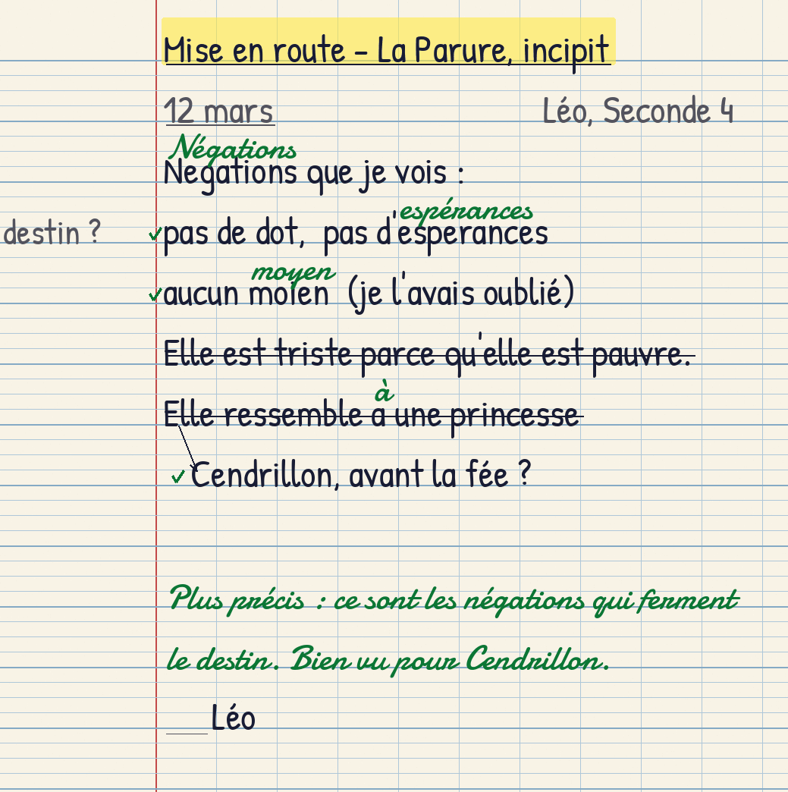
Document 1. Guy de Maupassant, La Parure, incipit. Palier 1
Domaine public. Texte confronté à l’édition C. Marpon et E. Flammarion, 1885, Contes du jour et de la nuit, sur Wikisource. On copie le texte tel quel, y compris « instruction publique » en minuscules, comme dans cette édition. La nouvelle a été lue en entier en amont. Aujourd’hui, on lit l’ouverture, mot pour mot.
Les lignes sont numérotées de cinq en cinq. Chaque passage porte un court titre et une question. Les mots difficiles sont expliqués en marge. C’est le palier 1 du marchepied : on ouvre l’accès au récit, on ne le simplifie pas.
Un destin déjà fermé
Quelles négations enferment Mathilde dès la première phrase ?
| Ligne | Texte | En marge |
|---|---|---|
| 1 | C’était une de ces jolies et charmantes filles, nées, | |
| 2 | comme par une erreur du destin, dans une famille | erreur du destin : un hasard présenté comme une faute du sort |
| 3 | d’employés. Elle n’avait pas de dot, pas d’espérances, | dot : bien qu’une jeune fille apporte au mariage |
| 4 | aucun moyen d’être connue, comprise, aimée, épousée | |
| 5 | par un homme riche et distingué ; et elle se laissa | |
| 6 | marier avec un petit commis du ministère de | commis : employé de bureau |
| 7 | l’instruction publique. |
Une beauté qui ne change pas la caste
Pourquoi la beauté de Mathilde ne suffit-elle pas à l’élever ?
| Ligne | Texte | En marge |
|---|---|---|
| 8 | Elle fut simple ne pouvant être parée, mais malheureuse | parée : habillée, ornée avec recherche |
| 9 | comme une déclassée ; car les femmes n’ont point de caste | déclassée : qui se sent en dessous de sa place |
| 10 | ni de race, leur beauté, leur grâce et leur charme leur | |
| 11 | servant de naissance et de famille. Leur finesse native, | |
| 12 | leur instinct d’élégance, leur souplesse d’esprit, sont | |
| 13 | leur seule hiérarchie, et font des filles du peuple les | |
| 14 | égales des plus grandes dames. |
Le rêve des salons
Que voit Mathilde, que son mari ne voit pas ?
| Ligne | Texte | En marge |
|---|---|---|
| 15 | Elle souffrait sans cesse, se sentant née pour toutes les | |
| 16 | délicatesses et tous les luxes. Elle souffrait de la pauvreté | |
| 17 | de son logement, de la misère des murs, de l’usure des | usure : état de ce qui est déjà trop servi |
| 18 | sièges, de la laideur des étoffes. Toutes ces choses, dont | étoffes : tissus, ameublement |
| 19 | une autre femme de sa caste ne se serait même pas aperçue, | caste : condition sociale |
| 20 | la torturaient et l’indignaient. La vue de la petite Bretonne | |
| 21 | qui faisait son humble ménage éveillait en elle des regrets | |
| 22 | désolés et des rêves éperdus. Elle songeait aux antichambres | antichambres : pièces d’attente, avant le salon |
| 23 | muettes, capitonnées avec des tentures orientales, éclairées | capitonnées : rembourrées, couvertes de tissu |
| 24 | par de hautes torchères de bronze, et aux deux grands valets | torchères : grands candélabres |
| 25 | en culotte courte qui dorment dans les larges fauteuils, | |
| 26 | assoupis par la chaleur lourde du calorifère. Elle songeait | calorifère : appareil de chauffage |
| 27 | aux grands salons vêtus de soie ancienne, aux meubles fins | |
| 28 | portant des bibelots inestimables, et aux petits salons | bibelots : objets précieux de décoration |
| 29 | coquets, parfumés, faits pour la causerie de cinq heures | |
| 30 | avec les amis les plus intimes, les hommes connus et | |
| 31 | recherchés dont toutes les femmes envient et désirent | |
| 32 | l’attention. |
Je lis le texte deux fois. La classe lit ensuite avec moi. Aïcha s’arrête sur « elle se laissa marier » : « Ce n’est pas elle qui choisit. » Chloé, déjà, lève la main : « C’est Cendrillon, mais sans la fée. »
Théo, lui, résiste : « On peut être malheureuse sans être Cendrillon. » Je l’approuve : c’est précisément ce qu’il faudra démontrer, pas seulement pressentir. La ressemblance ne suffit pas. Il faudra des preuves.
Document 2. Charles Perrault, Cendrillon ou la petite Pantoufle de verre, ouverture. Palier 1
Domaine public. Texte confronté à l’édition Casterman, 1902, sur Wikisource. Court passage, exact.
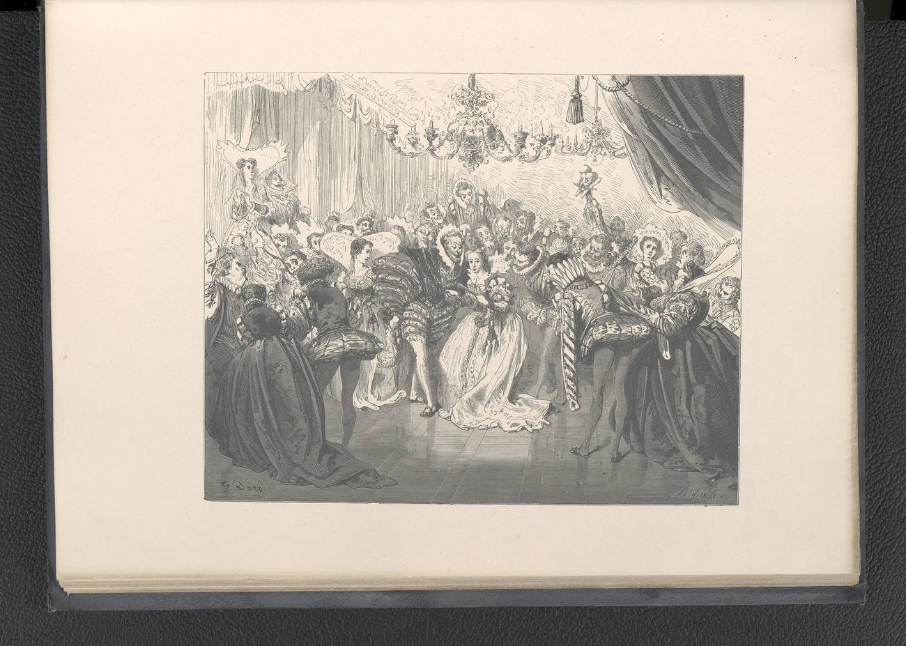
Quelle place la jeune fille occupe-t-elle, avant toute magie ?
| Ligne | Texte | En marge |
|---|---|---|
| 1 | Il était une fois un gentilhomme qui épousa, en secondes | gentilhomme : homme de naissance noble |
| 2 | noces, une femme, la plus hautaine et la plus fière qu’on | hautaine : orgueilleuse, qui regarde de haut |
| 3 | eût jamais vue. Elle avait deux filles de son humeur, et | |
| 4 | qui lui ressemblaient en toutes choses. Le mari avait, de | |
| 5 | son côté, une jeune fille, mais d’une douceur et d’une | |
| 6 | bonté sans exemple : elle tenait cela de sa mère, qui était | |
| 7 | la meilleure personne du monde. |
Hugo lit à voix haute, lentement. Camille note : chez Perrault, la bonté est donnée d’emblée ; chez Maupassant, c’est la beauté, et le malheur d’une « déclassée ».
Spirale de Gorse. L’incipit de La Parure
La Spirale de Gorse, conçue par Madame Carole Paoli Pompougnac. À l’extérieur, l’idée. À l’intérieur, les mots du texte. On avance du premier tour vers la pointe. Aujourd’hui, on commence les trois premiers tours ; on achèvera les cinq demain, avec l’excipit.
| Tour | Je… | Question | Je regarde (à l’intérieur : le document) |
|---|---|---|---|
| Tour 1 | Je repère | Quelle illusion initiale porte Mathilde ? | « erreur du destin », « née pour toutes les délicatesses et tous les luxes », « tentures orientales » |
| Tour 2 | J’identifie | Qu’est-ce qui, dès l’ouverture, empêche l’ascension ? | « pas de dot, pas d’espérances, aucun moyen », « elle se laissa marier » |
| Tour 3 | Je comprends | Quelle force pèse déjà, à la place de la magie ? | La pauvreté du logement, « l’usure des sièges », le « petit commis », le calendrier social des « salons » |
| Tour 4 | Je problématise | (à achever à la seconde heure, avec l’excipit) | |
| La pointe | Je trouve le sens | (à achever à la seconde heure) | Le document tout entier |
Tableau de station
| Je veux… | Je peux dire |
|---|---|
| Citer | « Elle n’avait pas de dot, pas d’espérances, aucun moyen. » |
| Comparer | Comme Cendrillon avant la fée, Mathilde se sent déclassée ; mais son déclassement est d’abord économique. |
| Être exact | On copie « instruction publique » comme dans l’édition de 1885. |
| Nuancer | La beauté, chez Maupassant, remplace la naissance, sans ouvrir les portes. |
Mise au point de langue. Les négations et le rêve
Chez Maupassant, l’incipit enferme par la grammaire autant que par le thème : trois négations en une seule phrase, puis un verbe qui retire à Mathilde jusqu’au choix (« elle se laissa marier »). Le rêve, lui, s’écrit au présent de l’habitude dans le souvenir : « Elle songeait… Elle songeait… »
Exercice 1. Relevez toutes les négations des lignes 1 à 7, puis réécrivez la phrase sans elles. Que devient le portrait ?
Exercice 2. Dans les lignes 15 à 32, classez les noms selon qu’ils appartiennent au logement réel ou au logement rêvé.
Contrôle rapide de formation
En une phrase, à l’oral, sans cahier : quelle force remplace déjà la magie, dans cet incipit ?
Trace écrite (ce qui entre dans le cahier)
Dès l’incipit de La Parure, Maupassant enferme Mathilde Loisel dans sa condition : « pas de dot, pas d’espérances, aucun moyen », « une erreur du destin ». Comme Cendrillon avant l’arrivée de la fée, elle se sent déclassée ; mais son déclassement est d’abord économique, et nulle marraine n’apparaît encore. Le rêve des salons, des torchères et de la soie prépare déjà l’illusion qui, demain, s’inversera. Formules utiles : « Elle se laissa marier avec un petit commis. » « Elle songeait aux grands salons vêtus de soie ancienne. »
Devoirs
Relire la nouvelle jusqu’à la fin, en notant le moment exact où le triomphe du bal bascule. Copier exactement les lignes 1 à 7. En six lignes, comparer la place de Mathilde et celle de Cendrillon avant toute magie, sans inventer de fée chez Maupassant.
Leçon 1, seconde heure. La chute financière : l’excipit de La Parure
Compétences travaillées : compréhension écrite, compréhension orale, production écrite, production orale.
Durée : 55 minutes, minutées sur 52 minutes. Les minutes 52 à 55 sont gardées comme marge de sécurité.
À la fin de cette heure, je peux : montrer comment l’excipit inverse le schéma de Cendrillon, et achever une Spirale de Gorse en cinq tours, avec une thèse et une limite.
Question du jour : Quel est l’effet, exactement inverse de la pantoufle de verre, de la perte de la rivière de diamants ?
Mise en route
À l’arrivée, pendant l’appel :
Dans votre cahier de brouillon, relisez, déjà copié au tableau, le portrait de Mathilde au début de l’excipit, de « Mme Loisel semblait vieille, maintenant » jusqu’à « lavait à grande eau les planchers ». Entourez les trois adjectifs qui disent le corps usé. En une phrase, dites ce qui, dans Cendrillon, arrive au contraire après le bal.
Écrivez d’abord dans votre cahier de brouillon, puis venez au tableau chacun votre tour.
Lignes à tracer au tableau :
Inès a entouré « forte », « dure », « rude ». Camille a ajouté « les mains rouges ». Léo a écrit : « Elle a vieilli, c’est triste. » Chloé, déjà : « Chez Perrault, après le bal, on devient princesse. Ici, on devient une femme de ménages pauvres. » Le point de bascule est en vue.
Document 3. Guy de Maupassant, La Parure, excipit. Palier 1
Domaine public. Même édition que l’incipit, Flammarion, 1885. Le passage est donné entier, sans coupure, de « Mme Loisel semblait vieille » jusqu’à la dernière réplique. On copie « Mme » en toutes lettres, et « les mains rouges », comme dans cette édition.
Le corps après dix ans
Que reste-t-il de la jolie fille de l’incipit ?
| Ligne | Texte | En marge |
|---|---|---|
| 1 | Mme Loisel semblait vieille, maintenant. Elle était | |
| 2 | devenue la femme forte, et dure, et rude, des ménages | ménages pauvres : foyers qui n’ont plus de domestique |
| 3 | pauvres. Mal peignée, avec les jupes de travers et les | |
| 4 | mains rouges, elle parlait haut, lavait à grande eau les | mains rouges : marquées par l’eau et le travail |
| 5 | planchers. Mais parfois, lorsque son mari était au bureau, | |
| 6 | elle s’asseyait auprès de la fenêtre, et elle songeait à | |
| 7 | cette soirée d’autrefois, à ce bal où elle avait été si belle | |
| 8 | et si fêtée. |
La question qui ne répare rien
Ces phrases au conditionnel ouvrent-elles encore un avenir, ou le ferment-elles ?
| Ligne | Texte | En marge |
|---|---|---|
| 9 | Que serait-il arrivé si elle n’avait point perdu cette | |
| 10 | parure ? Qui sait ? qui sait ? Comme la vie est singulière, | parure : ici, la rivière de diamants |
| 11 | changeante ! Comme il faut peu de chose pour vous perdre | |
| 12 | ou vous sauver ! |
La révélation
Pourquoi le dernier mot de Mme Forestier produit-il une ironie si complète ?
| Ligne | Texte | En marge |
|---|---|---|
| 13 | Or, un dimanche, comme elle était allée faire un tour aux | |
| 14 | Champs-Élysées pour se délasser des besognes de la semaine, | se délasser : se reposer |
| 15 | elle aperçut tout à coup une femme qui promenait un enfant. | |
| 16 | C’était Mme Forestier, toujours jeune, toujours belle, | |
| 17 | toujours séduisante. | |
| 18 | Mme Loisel se sentit émue. Allait-elle lui parler ? Oui, | |
| 19 | certes. Et maintenant qu’elle avait payé, elle lui dirait | |
| 20 | tout. Pourquoi pas ? | |
| 21 | Elle s’approcha. | |
| 22 | — Bonjour, Jeanne. | |
| 23 | L’autre ne la reconnaissait point, s’étonnant d’être appelée | |
| 24 | ainsi familièrement par cette bourgeoise. | |
| 25 | Elle balbutia : | |
| 26 | — Mais… madame !… Je ne sais… Vous devez vous tromper. | |
| 27 | — Non. Je suis Mathilde Loisel. | |
| 28 | Son amie poussa un cri. | |
| 29 | — Oh !… ma pauvre Mathilde, comme tu es changée !… | |
| 30 | — Oui, j’ai eu des jours bien durs, depuis que je ne t’ai | |
| 31 | vue ; et bien des misères… et cela à cause de toi !… | |
| 32 | — De moi… Comment ça ? | |
| 33 | — Tu te rappelles bien cette rivière de diamants que tu | rivière : collier de pierreries montées en ligne |
| 34 | m’as prêtée pour aller à la fête du Ministère. | |
| 35 | — Oui. Eh bien ? | |
| 36 | — Eh bien, je l’ai perdue. | |
| 37 | — Comment ! puisque tu me l’as rapportée. | |
| 38 | — Je t’en ai rapporté une autre toute pareille. Et voilà | |
| 39 | dix ans que nous la payons. Tu comprends que ça n’était | |
| 40 | pas aisé pour nous, qui n’avions rien… Enfin c’est fini, | |
| 41 | et je suis rudement contente. | |
| 42 | Mme Forestier s’était arrêtée. | |
| 43 | — Tu dis que tu as acheté une rivière de diamants pour | |
| 44 | remplacer la mienne ? | |
| 45 | — Oui. Tu ne t’en étais pas aperçue, hein ? Elles étaient | |
| 46 | bien pareilles. | |
| 47 | Et elle souriait d’une joie orgueilleuse et naïve. | |
| 48 | Mme Forestier, fort émue, lui prit les deux mains. | |
| 49 | — Oh ! ma pauvre Mathilde ! Mais la mienne était fausse. | |
| 50 | Elle valait au plus cinq cents francs !… |
Un silence suit la dernière réplique. Même Léo ne se jette pas. Puis Hugo, très bas, relit : « Elle valait au plus cinq cents francs. » Aïcha rectifie le chiffre qu’on avait retenu la veille : le bijou vrai, eux l’avaient payé trente-six mille francs. Nathan, déjà, cherche la limite : « Elle n’a pas osé dire qu’elle avait perdu le collier. Ce n’est pas seulement la société. »
Questionnaire d’analyse guidée
- Le déterminisme initial (rappel de l’incipit). Relevez les négations et les termes liés à la fatalité dans le premier paragraphe du Texte A. En quoi Mathilde ressemble-t-elle à Cendrillon avant l’arrivée de la fée ?
- L’illusion du merveilleux. Dans l’ensemble de la nouvelle, quels personnages jouent le rôle de la marraine (Mme Forestier) et du palais (le bal du ministre) ? Pourquoi cette magie est-elle purement matérielle ?
- L’inversion de l’objet magique. Dans Cendrillon, la perte de la pantoufle de verre permet la reconnaissance et l’ascension sociale. Quel est l’effet exactement inverse de la perte de la rivière de diamants ?
- La chute et l’ironie. Analysez le portrait physique de Mathilde au début de l’excipit. Quel effet produit, sur le lecteur, la révélation finale de Mme Forestier ?
Spirale de Gorse. La Parure, cinq tours
Consigne, en binôme : sur une feuille, tracer une spirale. Placer les idées à l’extérieur et les citations de l’incipit et de l’excipit à l’intérieur, pour aboutir au centre.
| Tour | Je… | Question | Je regarde (à l’intérieur : le document) |
|---|---|---|---|
| Tour 1. L’illusion | Je repère | Quel rêve aristocratique porte Mathilde ? | « erreur du destin », « tentures orientales », « si belle et si fêtée » |
| Tour 2. La bascule | J’identifie | Où la spirale s’inverse-t-elle ? | La soirée de triomphe, puis la perte ; ici, le souvenir du bal au milieu des planchers |
| Tour 3. La gravité financière | Je mesure | Quelles forces du réel transforment le corps ? | « dix ans que nous la payons », « trente-six mille francs » (dans le corps de la nouvelle), « vieille », « mains rouges » |
| Tour 4. La problématique | Je formule | Comment Maupassant détourne-t-il le mythe de Cendrillon pour montrer que l’argent et la vanité broient l’individu ? | L’objet perdu, le bijou faux, le portrait usé |
| Tour 5. Centre. Thèse et limite | Je trouve le sens | Quelle critique sociale, et quelle limite ? | Le document tout entier |
Trace écrite (ce qui entre dans le cahier)
L’excipit de La Parure inverse le schéma de Cendrillon. La perte de la rivière, au lieu d’élever Mathilde, la fait chuter pendant dix ans. Le portrait « forte, et dure, et rude », les « mains rouges », disent l’usure du corps. La dernière réplique de Mme Forestier, « Mais la mienne était fausse. Elle valait au plus cinq cents francs !… », achève l’ironie : on a payé trente-six mille francs un objet qui n’en valait pas cinq cents. Thèse : dans le monde de Maupassant, on ne change pas de classe par magie. Limite : Mathilde n’a pas osé avouer la perte. Formules utiles : « Elle valait au plus cinq cents francs. » « Et voilà dix ans que nous la payons. »
Devoirs
Apprendre la dernière réplique, exacte, et le portrait des lignes 1 à 5. Rédiger, en quinze lignes, la réponse à la question 3 du questionnaire, avec deux citations. Apporter, pour la leçon suivante, le souvenir précis du bal dans Madame Bovary, partie I, chapitre 8 (lecture en amont des pages indiquées).
Leçon 2, première heure. L’intoxication romanesque : le bal de la Vaubyessard
Compétences travaillées : compréhension écrite, compréhension orale, production orale, production écrite.
Durée : 55 minutes, minutées sur 52 minutes. Les minutes 52 à 55 sont gardées comme marge de sécurité.
À la fin de cette heure, je peux : montrer comment le bal de la Vaubyessard agit, chez Flaubert, comme le bal de Cendrillon, puis laisse dans la vie d’Emma un trou que rien ne répare.
Question du jour : Que reste-t-il du bal, une fois les souliers de satin rentrés dans la commode ?
Mise en route
À l’arrivée, pendant l’appel :
Dans votre cahier de brouillon, relisez le dernier paragraphe du chapitre, déjà copié au tableau, de « Ce fut donc une occupation pour Emma que le souvenir de ce bal » jusqu’à « le regret lui resta ». Soulignez le dernier groupe de mots. En une phrase, dites ce qui, chez Cendrillon, reste après le bal, et ce qui reste ici.
Écrivez d’abord dans votre cahier de brouillon, puis venez au tableau chacun votre tour.
Lignes à tracer au tableau :
Yanis a déjà noté : « Chez Cendrillon, il reste une pantoufle qui sauve. Ici, il reste un regret. » Eva regarde, projetée, la toile de James Tissot, Too Early, 1873 : un salon lumineux, un lustre, des robes claires, et ce moment d’attente avant que la fête ne commence. « On dirait avant le bal », dit-elle. Exactement : Flaubert, lui, nous fera voir aussi l’après.
Aïcha, elle, exige la citation exacte. Voici sa page.
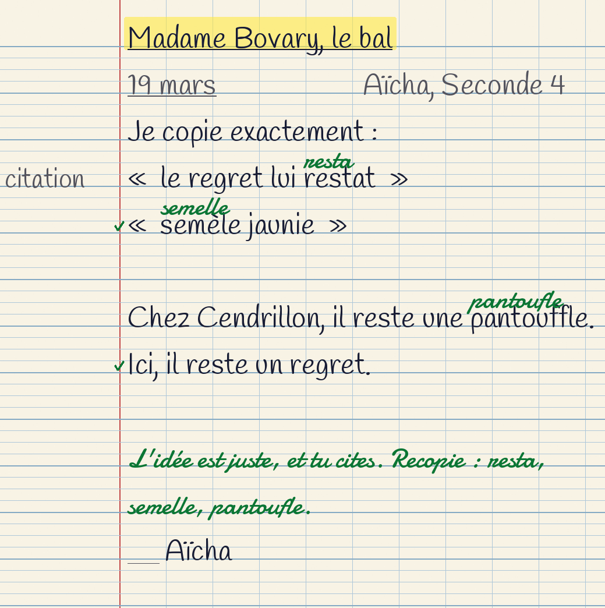
Document 4. James Tissot, Too Early, 1873
Huile sur toile, Guildhall Art Gallery, Londres. Domaine public. Un salon clair, un lustre, des musiciens, des robes de soirée. Quelques invités sont déjà là, un peu trop tôt. Rien n’est triste : tout est en attente. Nous gardons cette lumière en tête pour lire le bal de la Vaubyessard, puis, plus tard, pour mesurer ce que le souvenir en fait.
Document 5. Gustave Flaubert, Madame Bovary, première partie, chapitre 8. La valse, puis le souvenir. Palier 1, qui s’efface déjà un peu
Domaine public. Texte confronté à l’édition Conard, 1910, d’après le texte de 1857, sur Wikisource. Deux passages continus, exacts, sans coupure à l’intérieur de chacun. On écrit « Mme Bovary » en toutes lettres.
La valse avec le vicomte
Comment le mouvement de la danse emporte-t-il Emma hors de son monde ?
| Ligne | Texte | En marge |
|---|---|---|
| 1 | À trois heures du matin, le cotillon commença. Emma ne | cotillon : danse de fin de bal, en figures |
| 2 | savait pas valser. Tout le monde valsait, Mlle d’Andervilliers | |
| 3 | elle-même et la marquise ; il n’y avait plus que les hôtes | |
| 4 | du château, une douzaine de personnes à peu près. | |
| 5 | Cependant, un des valseurs, qu’on appelait familièrement | |
| 6 | vicomte, et dont le gilet très ouvert semblait moulé sur | |
| 7 | sa poitrine, vint une seconde fois encore inviter Mme Bovary, | |
| 8 | l’assurant qu’il la guiderait et qu’elle s’en tirerait bien. | |
| 9 | Ils commencèrent lentement, puis allèrent plus vite. Ils | |
| 10 | tournaient : tout tournait autour d’eux, les lampes, les | |
| 11 | meubles, les lambris, et le parquet, comme un disque sur | lambris : boiseries des murs |
| 12 | un pivot. En passant auprès des portes, la robe d’Emma, | |
| 13 | par le bas, s’éraflait au pantalon ; leurs jambes entraient | s’éraflait : s’usait légèrement au contact |
| 14 | l’une dans l’autre ; il baissait ses regards vers elle, elle | |
| 15 | levait les siens vers lui ; une torpeur la prenait, elle | torpeur : engourdissement, demi-évanouissement |
| 16 | s’arrêta. Ils repartirent ; et, d’un mouvement plus rapide, | |
| 17 | le vicomte, l’entraînant, disparut avec elle jusqu’au bout | |
| 18 | de la galerie, où, haletante, elle faillit tomber, et, un | |
| 19 | instant, s’appuya la tête sur sa poitrine. Et puis, tournant | |
| 20 | toujours, mais plus doucement, il la reconduisit à sa place ; | |
| 21 | elle se renversa contre la muraille et mit la main devant | |
| 22 | ses yeux. |
Le trou dans la vie
Que devient le bal, une fois Emma rentrée chez elle ?
| Ligne | Texte | En marge |
|---|---|---|
| 23 | La journée fut longue, le lendemain ! Elle se promena dans | |
| 24 | son jardinet, passant et revenant par les mêmes allées, | |
| 25 | s’arrêtant devant les plates-bandes, devant l’espalier, | espalier : arbres fruitiers contre un mur |
| 26 | devant le curé de plâtre, considérant avec ébahissement | ébahissement : stupeur |
| 27 | toutes ces choses d’autrefois qu’elle connaissait si bien. | |
| 28 | Comme le bal déjà lui semblait loin ! Qui donc écartait, à | |
| 29 | tant de distance, le matin d’avant-hier et le soir d’aujourd’hui ? | |
| 30 | Son voyage à la Vaubyessard avait fait un trou dans sa vie, | |
| 31 | à la manière de ces grandes crevasses qu’un orage, en une | crevasses : fentes ouvertes dans la montagne |
| 32 | seule nuit, creuse quelquefois dans les montagnes. Elle se | |
| 33 | résigna pourtant ; elle serra pieusement dans la commode | |
| 34 | sa belle toilette et jusqu’à ses souliers de satin, dont la | |
| 35 | semelle s’était jaunie à la cire glissante du parquet. Son | |
| 36 | cœur était comme eux : au frottement de la richesse, il | |
| 37 | s’était placé dessus quelque chose qui ne s’effacerait pas. | |
| 38 | Ce fut donc une occupation pour Emma que le souvenir de | |
| 39 | ce bal. Toutes les fois que revenait le mercredi, elle se | |
| 40 | disait en s’éveillant : « Ah ! il y a huit jours… il y a quinze | |
| 41 | jours…, il y a trois semaines, j’y étais ! » Et peu à peu, les | |
| 42 | physionomies se confondirent dans sa mémoire, elle oublia | |
| 43 | l’air des contredanses, elle ne vit plus si nettement les | contredanses : danses de salon |
| 44 | livrées et les appartements ; quelques détails s’en allèrent, | livrées : habits des domestiques |
| 45 | mais le regret lui resta. |
Chloé murmure : « Les souliers de satin. » Oui. Chez Perrault, une pantoufle de verre reste derrière soi et fait retrouver la jeune fille. Ici, Emma range ses souliers, la semelle déjà jaunie, et « son cœur était comme eux ». Aïcha exige qu’on copie « ne s’effacerait pas » au conditionnel, tel quel. Yanis, lui, entend déjà la physique : « Le bal est l’impulsion. Après, la spirale s’inverse. Le quotidien ne peut plus tenir. »
Spirale de Gorse. Le bal de la Vaubyessard
| Tour | Je… | Question | Je regarde (à l’intérieur : le document) |
|---|---|---|---|
| Tour 1 | Je repère | Quelle illusion le bal donne-t-il à Emma ? | La valse, le vicomte, « tout tournait autour d’eux » |
| Tour 2 | J’identifie | Où le récit quitte-t-il le palais ? | Le jardinet, le curé de plâtre, les mêmes allées |
| Tour 3 | Je mesure | Quel objet porte encore la marque du bal ? | « ses souliers de satin, dont la semelle s’était jaunie » ; « Son cœur était comme eux » |
| Tour 4 | Je formule | Comment Flaubert retourne-t-il le bal de Cendrillon en une intoxication qui ne s’arrête plus ? | « un trou dans sa vie », « le regret lui resta » |
| Tour 5 | Je trouve le sens | Thèse et limite, à préciser demain avec la poudre blanche | Le document tout entier |
Contrôle rapide de formation
Complétez : « Son voyage à la Vaubyessard avait fait un _____ dans sa vie. » Puis, oralement, nommez l’objet qui garde la trace du bal.
Corrigé : « trou » ; les souliers de satin, la semelle jaunie.
Trace écrite (ce qui entre dans le cahier)
Le bal de la Vaubyessard est, pour Emma, le bal de Cendrillon : une valse, un vicomte, un château. Dès le lendemain, Flaubert inverse le schéma. Les souliers de satin, semelle jaunie, ne font reconnaître personne ; « Son cœur était comme eux. » Le souvenir devient « une occupation », et « le regret lui resta ». Le bal a fait « un trou dans sa vie ». Formules utiles : « Ils tournaient : tout tournait autour d’eux. » « le regret lui resta. »
Devoirs
Apprendre les lignes 30 à 37. En dix lignes, comparer la pantoufle de Cendrillon et les souliers d’Emma. Lecture, en amont, du geste d’Emma chez le pharmacien, partie III, chapitre 8, jusqu’à « la sérénité d’un devoir accompli » seulement : nous ne lirons pas, en classe, toute la scène clinique.
Leçon 2, seconde heure. La pomme sans baiser : la poudre blanche
Compétences travaillées : compréhension écrite, compréhension orale, production écrite, production orale.
Durée : 55 minutes, minutées sur 52 minutes. Les minutes 52 à 55 sont gardées comme marge de sécurité.
À la fin de cette heure, je peux : lire avec retenue le geste par lequel Emma prend l’arsenic, le comparer à la pomme de Blanche-Neige, et achever la spirale de la leçon 2, avec une thèse et une limite.
Question du jour : Quand la « pomme » de la fiction se prend à pleines mains, qui vient réveiller Emma ?
Nous lisons aujourd’hui avec retenue. Le chapitre 8 de la troisième partie contient des pages très dures, que nous ne reproduisons pas ici. Nous lisons le geste, puis une scène courte, celle du petit soulier de Berthe. Nous dirons, sans nous y attarder, que le chapitre s’achève sans baiser qui sauve.
Mise en route
À l’arrivée, pendant l’appel :
Dans votre cahier de brouillon, relisez, déjà copié au tableau, le geste d’Emma devant le bocal bleu, de « La clef tourna dans la serrure » jusqu’à « elle se mit à manger à même ». Entourez les deux mots qui disent la couleur du bocal et la couleur de la poudre. En une phrase, dites à quel objet de conte cette poudre blanche peut faire penser.
Écrivez d’abord dans votre cahier de brouillon, puis venez au tableau chacun votre tour.
Lignes à tracer au tableau :
Louise a entouré « bleu » et « blanche ». Chloé a écrit : « La pomme de Blanche-Neige. » Léo ajoute : « Mais il n’y a pas de sorcière. C’est elle qui la prend. » La distinction est juste, et nous la garderons.
Document 6. Gustave Flaubert, Madame Bovary, troisième partie, chapitre 8. Le geste, puis le petit soulier. Palier 2
Domaine public. Même édition Conard, 1910. Deux extraits continus, exacts. Le second s’arrête avant les pages les plus dures du chapitre. On lit avec gravité, sans s’attarder sur la souffrance.
La poudre blanche
Qui tend la pomme, ici, et qui la prend ?
| Ligne | Texte | En marge |
|---|---|---|
| 1 | La clef tourna dans la serrure, et elle alla droit vers la | |
| 2 | troisième tablette, tant son souvenir la guidait bien, saisit | |
| 3 | le bocal bleu, en arracha le bouchon, y fourra sa main, et, | bocal : grand flacon de verre |
| 4 | la retirant pleine d’une poudre blanche, elle se mit à | |
| 5 | manger à même. | à même : directement, sans cuiller |
| 6 | — Arrêtez ! s’écria-t-il en se jetant sur elle. | |
| 7 | — Tais-toi ! on viendrait… | |
| 8 | Il se désespérait, voulait appeler. | |
| 9 | — N’en dis rien, tout retomberait sur ton maître ! | |
| 10 | Puis elle s’en retourna subitement apaisée, et presque dans | |
| 11 | la sérénité d’un devoir accompli. |
Le petit soulier de Berthe
Quel objet de conte apparaît encore, trop tard, et pour qui ?
| Ligne | Texte | En marge |
|---|---|---|
| 12 | — Amenez-moi la petite, dit-elle en se soulevant du coude. | |
| 13 | — Tu n’es pas plus mal, n’est-ce pas ? demanda Charles. | |
| 14 | — Non ! non ! | |
| 15 | L’enfant arriva sur le bras de sa bonne, dans sa longue | |
| 16 | chemise de nuit, d’où sortaient ses pieds nus, sérieuse et | |
| 17 | presque rêvant encore. Elle considérait avec étonnement la | |
| 18 | chambre tout en désordre, et clignait des yeux, éblouie par | |
| 19 | les flambeaux qui brûlaient sur les meubles. Ils lui rappelaient | |
| 20 | sans doute les matins du jour de l’an ou de la mi-carême, | |
| 21 | quand, ainsi réveillée de bonne heure à la clarté des bougies, | |
| 22 | elle venait dans le lit de sa mère pour y recevoir ses étrennes, | étrennes : cadeaux du jour de l’an |
| 23 | car elle se mit à dire : | |
| 24 | — Où est-ce donc, maman ? | |
| 25 | Et comme tout le monde se taisait : | |
| 26 | — Mais je ne vois pas mon petit soulier ! |
La classe est très calme. Camille a les yeux sur la ligne 26. Inès dit, presque pour elle : « C’est encore une pantoufle. Mais ce n’est plus celle du palais. C’est celle d’un enfant. » Je confirme, sans rien ajouter de sombre : Flaubert fait revenir l’objet du conte au moment où plus aucun prince ne peut entrer. Le chapitre, dans le roman, s’achève sans baiser qui réveille. Une voix dans la rue répond à Emma, ce n’est pas un sauveur. Nous n’avons pas besoin d’aller plus loin pour comprendre l’inversion.
Spirale de Gorse. L’intoxication romanesque, cinq tours
| Tour | Je… | Question | Je regarde (à l’intérieur : le document) |
|---|---|---|---|
| Tour 1 | Je repère | Quelle illusion le bal a-t-il laissée ? | Le souvenir, le regret, les souliers jaunis (leçon précédente) |
| Tour 2 | J’identifie | Quel geste inverse définitivement la spirale ? | « une poudre blanche, elle se mit à manger à même » |
| Tour 3 | Je mesure | Quelle force du réel a rendu ce geste possible ? | L’endettement, Lheureux, la saisie (rappels de lecture) ; ici, « la sérénité d’un devoir accompli » |
| Tour 4 | Je formule | Comment Flaubert remplace-t-il la pomme de Blanche-Neige par un poison sans contre-sort ? | Le bocal bleu, l’absence de baiser, le petit soulier de Berthe |
| Tour 5 | Je trouve le sens | Thèse et limite | Le document tout entier |
Trace écrite (ce qui entre dans le cahier)
Le bal a agi comme un virus. Emma a voulu acheter le rêve à crédit. La poudre blanche, « à même », est la pomme de Blanche-Neige sans contre-sort : Emma la prend elle-même, et s’en retourne « presque dans la sérénité d’un devoir accompli ». Le petit soulier de Berthe fait revenir l’objet de Cendrillon, trop tard, pour un enfant, non pour une princesse. Thèse : Flaubert refuse le baiser qui sauve. Limite : Emma a aussi choisi le rêve contre le monde commun. Formules utiles : « une poudre blanche, elle se mit à manger à même. » « Mais je ne vois pas mon petit soulier ! »
Devoirs
Reprendre la spirale complète de la leçon 2 au propre, avec cinq citations exactes. Lecture en amont, pour la leçon 3, de la chronique de la « Mouche d’or » (Nana, chapitre 7) : le seul portrait donné par le journal, pas la scène qui l’entoure.
Leçon 3. L’ogre social et la proie : la « Mouche d’or »
Compétences travaillées : compréhension écrite, compréhension orale, production écrite, production orale.
Durée : 55 minutes, minutées sur 52 minutes, plus un complément de 30 minutes lorsque la séance dure 1 h 30. Les minutes 52 à 55 de la première heure sont gardées comme marge de sécurité.
À la fin de cette leçon, je peux : expliquer comment Zola, dans la chronique de la « Mouche d’or », inverse le schéma du Petit Chaperon rouge, la proie devenant une force qui dévore les fortunes du Second Empire.
Question du jour : Quand la jeune fille du peuple n’est plus la proie, que devient le loup ?
Nous lisons seulement le portrait que le journaliste Fauchery donne de Nana, un passage continu, exact. Nous n’entrons pas dans la scène qui l’entoure. Certaines images de Zola sont fortes : on les entend pour ce qu’elles disent d’une société, sans s’y attarder.
Mise en route
À l’arrivée, pendant l’appel :
Dans votre cahier de brouillon, relisez, déjà copié au tableau, la dernière comparaison de la chronique, de « Et c’était à la fin de l’article » jusqu’à « par les fenêtres ». Soulignez le nom de l’insecte et l’adjectif de couleur. En une phrase, dites qui, dans Le Petit Chaperon rouge, dévore, et qui, dans cette comparaison, empoisonne.
Écrivez d’abord dans votre cahier de brouillon, puis venez au tableau chacun votre tour.
Lignes à tracer au tableau :
Yanis a déjà une flèche : « La proie est devenue le vortex. » Théo demande : « Zola accable-t-il Nana, ou la société qui l’a faite ? » Nous garderons sa question pour le tour 5.
Théo résiste d’abord, puis corrige. Voici son brouillon.
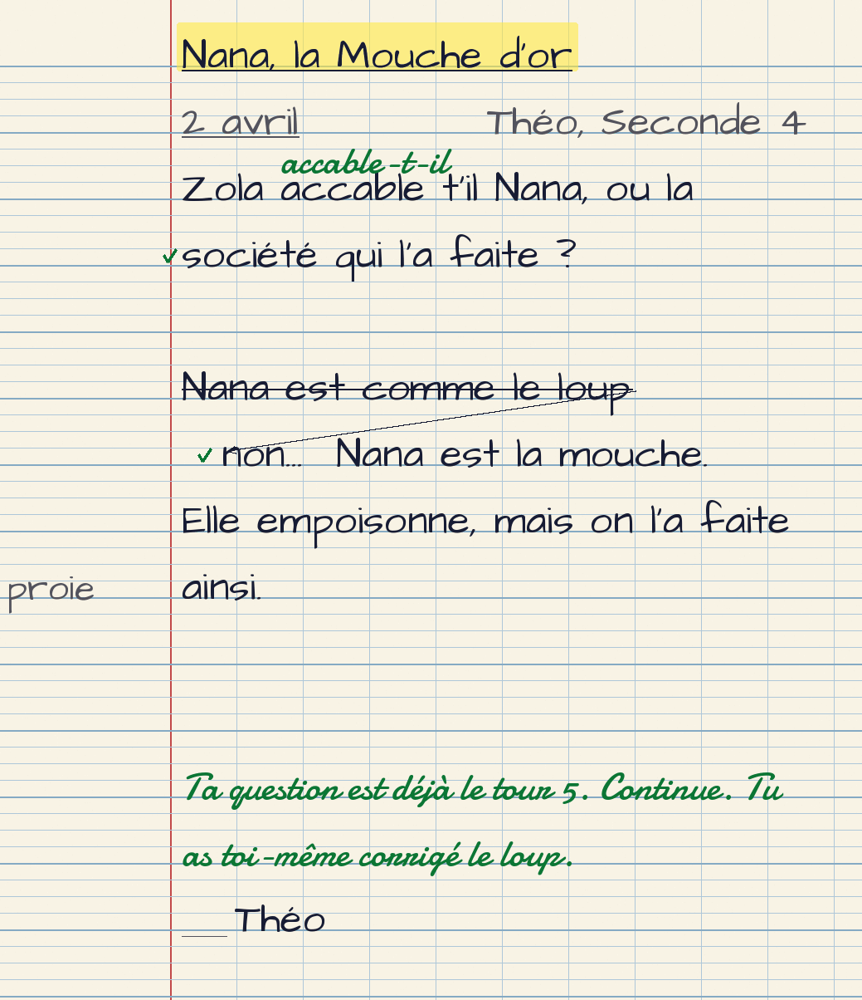
Document 7. Charles Perrault, Le Petit Chaperon rouge, dénouement. Palier 2
Domaine public. Édition Casterman, 1902, Wikisource. Court passage exact, pour tenir le contre-modèle, sans s’y attarder.
| Ligne | Texte |
|---|---|
| 1 | — Ma mère-grand, que vous avez de grandes dents ! — C’est |
| 2 | pour te manger ! Et, en disant ces mots, ce méchant Loup se |
| 3 | jeta sur le petit Chaperon rouge, et la mangea. |
Document 8. Émile Zola, Nana, chapitre 7. La chronique de Fauchery, « La Mouche d’or ». Palier 2
Domaine public. Texte confronté à l’édition de Nana sur Wikisource. Passage continu, exact, du début du résumé de la chronique jusqu’à la comparaison finale. Moins de gloses qu’au palier 1 : le marchepied s’efface un peu.
Comment la jeune fille née « sur le pavé parisien » devient-elle une force, et non plus une proie ?
| Ligne | Texte | En marge |
|---|---|---|
| 1 | La chronique de Fauchery, intitulée la Mouche d’Or, était | chronique : article de journal, ici dans Le Figaro |
| 2 | l’histoire d’une fille, née de quatre ou cinq générations | |
| 3 | d’ivrognes, le sang gâté par une longue hérédité de misère | hérédité : transmission du milieu et du sang, idée naturaliste |
| 4 | et de boisson, qui se transformait chez elle en un détraquement | |
| 5 | nerveux de son sexe de femme. Elle avait poussé dans un | |
| 6 | faubourg, sur le pavé parisien ; et, grande, belle, de chair | faubourg : quartier populaire, aux portes de la ville |
| 7 | superbe ainsi qu’une plante de plein fumier, elle vengeait | |
| 8 | les gueux et les abandonnés dont elle était le produit. Avec | gueux : les plus pauvres |
| 9 | elle, la pourriture qu’on laissait fermenter dans le peuple | |
| 10 | remontait et pourrissait l’aristocratie. Elle devenait une | |
| 11 | force de la nature, un ferment de destruction, sans le vouloir | ferment : ce qui fait lever, et aussi ce qui corrompt |
| 12 | elle-même, corrompant et désorganisant Paris entre ses cuisses | |
| 13 | de neige, le faisant tourner comme des femmes, chaque mois, | |
| 14 | font tourner le lait. Et c’était à la fin de l’article que se | |
| 15 | trouvait la comparaison de la mouche, une mouche couleur de | |
| 16 | soleil, envolée de l’ordure, une mouche qui prenait la mort | |
| 17 | sur les charognes tolérées le long des chemins, et qui, | |
| 18 | bourdonnante, dansante, jetant un éclat de pierreries, | |
| 19 | empoisonnait les hommes rien qu’à se poser sur eux, dans les | |
| 20 | palais où elle entrait par les fenêtres. |
Sami siffle bas, puis se reprend. Aïcha lit deux fois « sans le vouloir elle-même ». Hugo veut jouer Fauchery : je lui demande plutôt de lire la comparaison de la mouche, lentement, jusqu’aux « fenêtres ». Eva dit : « C’est lumineux et dangereux à la fois, la couleur de soleil, et les palais. » Oui. Le naturalisme dévoile les appétits du Second Empire, sans féerie.
Je rappelle, pour le centre de la spirale, un fait de lecture, sans le décrire : au chapitre 14, la loi que Zola applique à la société rattrape aussi Nana, et la guerre de 1870 éclate. L’entropie n’épargne personne. Nous n’ouvrons pas ce chapitre en classe.
Spirale de Gorse. La « Mouche d’or »
| Tour | Je… | Question | Je regarde (à l’intérieur : le document) |
|---|---|---|---|
| Tour 1 | Je repère | D’où vient Nana, dans le portrait de Fauchery ? | « née de quatre ou cinq générations d’ivrognes », « faubourg », « pavé parisien » |
| Tour 2 | J’identifie | Où le schéma du Chaperon s’inverse-t-il ? | « elle vengeait les gueux » ; elle entre « dans les palais » |
| Tour 3 | Je mesure | Quelles forces naturalistes travaillent ici ? | Hérédité, « ferment de destruction », « sans le vouloir elle-même » |
| Tour 4 | Je formule | Comment Zola fait-il d’une jeune fille du peuple le vortex qui dévore le Second Empire ? | « mouche couleur de soleil », « empoisonnait les hommes rien qu’à se poser sur eux » |
| Tour 5 | Je trouve le sens | Thèse et limite | Le document tout entier |
Trace écrite (ce qui entre dans le cahier)
Dans Le Petit Chaperon rouge, le loup dévore la jeune fille. Dans la chronique de Fauchery, Nana, née « sur le pavé parisien », « vengeait les gueux et les abandonnés dont elle était le produit ». Elle entre « dans les palais où elle entrait par les fenêtres ». La « mouche couleur de soleil » empoisonne « rien qu’à se poser » sur les hommes. Thèse : le naturalisme inverse la prédation et dévoile les appétits du Second Empire. Limite : Nana agit « sans le vouloir elle-même ». Formules utiles : « une mouche couleur de soleil » ; « sans le vouloir elle-même ».
Devoirs
Copier exactement les lignes 15 à 20. En quinze lignes, rédiger l’inversion du Chaperon, avec deux citations. Lecture en amont, pour la leçon 4 : l’arrivée de Lucien à Paris (le débarquement à l’hôtel du Gaillard-Bois) et le moment où, « dévoré par la misère et poussé par l’ambition », il feint de ne pas voir d’Arthez.
Leçon 4. Le labyrinthe des illusions : Lucien à Paris
Compétences travaillées : compréhension écrite, compréhension orale, production écrite, production orale.
Durée : 55 minutes, minutées sur 52 minutes, plus un complément de 30 minutes lorsque la séance dure 1 h 30. Les minutes 52 à 55 de la première heure sont gardées comme marge de sécurité.
À la fin de cette leçon, je peux : montrer comment Balzac, dès l’arrivée de Lucien à Paris, puis au moment où le jeune homme quitte le Cénacle pour le journalisme, retourne le schéma du Petit Poucet : on sème de l’argent sur la route, non des cailloux blancs, et l’ogre a le visage d’un directeur de journal.
Question du jour : Que devient le Petit Poucet, quand Paris n’est plus une forêt où l’on sème des cailloux, mais une ville où l’on se fait dévorer ?
On ne reprend aucun passage du Père Goriot, déjà lu ailleurs dans ce livre. Tous les extraits viennent de la deuxième partie d’Illusions perdues : Un grand homme de province à Paris.
Mise en route
À l’arrivée, pendant l’appel :
Dans votre cahier de brouillon, relisez, déjà copié au tableau, la phrase du voyage : « Lucien, qui allait en poste pour la première fois de sa vie, fut très-ébahi de voir semer sur la route d’Angoulême à Paris presque toute la somme qu’il destinait à sa vie d’une année. » Soulignez le verbe « semer ». En une phrase, dites ce que le Petit Poucet sème, lui, pour retrouver son chemin.
Écrivez d’abord dans votre cahier de brouillon, puis venez au tableau chacun votre tour.
Lignes à tracer au tableau :
Yanis a déjà fait le lien : « Il sème son argent, pas des cailloux. Il ne pourra pas revenir. » Chloé sourit : « Les bottes de sept lieues, ce sera le journal. » Nous verrons que ce n’est pas si simple.
Document 9. Charles Perrault, Le Petit Poucet, les cailloux blancs. Palier 2
Domaine public. Édition Casterman, 1902, Wikisource. Passage continu, exact.
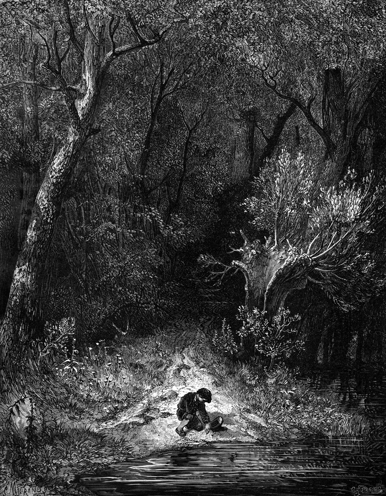
| Ligne | Texte | En marge |
|---|---|---|
| 1 | Il se leva de bon matin, et alla au bord d’un ruisseau, | |
| 2 | où il emplit ses poches de petits cailloux blancs, et ensuite | |
| 3 | revint à la maison. |
On projette, un moment, la gravure de Gustave Doré : Poucet au bord de l’eau, dans un rayon de lumière, ramassant les cailloux. L’image est claire, presque tender. Eva la retient : « Il prépare son retour. »
Document 10. Honoré de Balzac, Illusions perdues, Un grand homme de province à Paris. Trois extraits. Palier 2, presque palier 3
Domaine public. Texte confronté à l’édition Vve A. Houssiaux, 1874, tome 8, sur Wikisource. On copie « très-ébahi » avec le trait d’union, comme dans cette édition. Moins de gloses. Les numéros de lignes suffisent déjà, par endroits, à se retrouver.
Semer sur la route
Que sème Lucien, au lieu des cailloux blancs ?
| Ligne | Texte | En marge |
|---|---|---|
| 1 | Lucien, qui allait en poste pour la première fois de sa vie, | en poste : en relais de chevaux, sur la grande route |
| 2 | fut très-ébahi de voir semer sur la route d’Angoulême à | très-ébahi : très étonné (graphie de l’édition de 1874) |
| 3 | Paris presque toute la somme qu’il destinait à sa vie d’une | |
| 4 | année. |
L’arrivée, déjà sans soleil
Le palais est-il au bout de la route ?
| Ligne | Texte | En marge |
|---|---|---|
| 5 | Les voyageurs débarquèrent à l’hôtel du Gaillard-Bois, rue | |
| 6 | de l’Échelle, avant le jour. Les deux amants étaient si | |
| 7 | fatigués l’un et l’autre, qu’avant tout Louise voulut se | |
| 8 | coucher et se coucha, non sans avoir ordonné à Lucien de | |
| 9 | demander une chambre au-dessus de l’appartement qu’elle prit. | |
| 10 | Lucien dormit jusqu’à quatre heures du soir. Madame de Bargeton | |
| 11 | le fit éveiller pour dîner, il s’habilla précipitamment en | |
| 12 | apprenant l’heure, et trouva Louise dans une de ces ignobles | ignobles : misérables, indignes |
| 13 | chambres qui sont la honte de Paris, où, malgré tant de | |
| 14 | prétentions à l’élégance, il n’existe pas encore un seul hôtel | |
| 15 | où tout voyageur riche puisse retrouver son chez soi. Quoiqu’il | |
| 16 | eût sur les yeux ces nuages que laisse un brusque réveil, Lucien | |
| 17 | ne reconnut pas sa Louise dans cette chambre froide, sans soleil, | |
| 18 | à rideaux passés, dont le carreau frotté semblait misérable, où | rideaux passés : tissus déjà défraîchis |
| 19 | le meuble était usé, de mauvais goût, vieux ou d’occasion. |
L’ogre du journal
À qui le texte compare-t-il Finot ?
| Ligne | Texte | En marge |
|---|---|---|
| 20 | Finot, cet homme d’une incontestable adresse à deviner le | Finot : directeur de journal |
| 21 | talent, dont il devait faire une grande consommation et qui | |
| 22 | le flairait comme un ogre sent la chair fraîche, cajola Lucien | |
| 23 | en essayant de l’embaucher dans l’escouade de journalistes | escouade : petite troupe |
| 24 | qu’il commandait, et Lucien mordit à ses flatteries. |
Lâcher les cailloux blancs
Que fait Lucien, quand il aperçoit d’Arthez ?
| Ligne | Texte | En marge |
|---|---|---|
| 25 | À son retour, Lucien vit, dans le coin du restaurant, Daniel | Daniel d’Arthez : le Cénacle du travail patient |
| 26 | tristement accoudé qui le regarda mélancoliquement ; mais, | |
| 27 | dévoré par la misère et poussé par l’ambition, il feignit de | |
| 28 | ne pas voir son frère du Cénacle, et suivit Lousteau. | Lousteau : le journaliste du succès facile |
Inès lit « comme un ogre sent la chair fraîche » deux fois. Léo s’écrie : « L’ogre, c’est Paris ! » Aïcha le reprend : « Dans cette phrase, l’ogre, c’est Finot. » La distinction est capitale : Carole nous a parlé de Paris comme forêt-ogre, et le texte le confirme par ce lexique, mais la preuve, d’abord, c’est cette comparaison exacte. Théo, lui, pointe le moment du Cénacle : « Là, il lâche les cailloux blancs. Le travail patient, c’était d’Arthez. Il suit Lousteau. »
Hugo demande les bottes de sept lieues. Je réponds avec le texte, sans les inventer chez Balzac : Lucien espère la gloire rapide du journal, comme on volerait des bottes. Mais les mots exacts, ici, sont « ogre », « dévoré », « semer sur la route ». Le reste est notre comparaison, et nous la distinguons toujours de la citation.
Spirale de Gorse. Lucien à Paris
| Tour | Je… | Question | Je regarde (à l’intérieur : le document) |
|---|---|---|---|
| Tour 1 | Je repère | Quelle illusion Lucien emporte-t-il d’Angoulême ? | Aller « en poste », la somme d’une année, Louise, la capitale |
| Tour 2 | J’identifie | Où la spirale s’inverse-t-elle, dès l’arrivée ? | « chambre froide, sans soleil », « ignobles chambres qui sont la honte de Paris » |
| Tour 3 | Je mesure | Quelles forces dévorent le provincial ? | L’argent déjà semé ; Finot « comme un ogre » ; « dévoré par la misère et poussé par l’ambition » |
| Tour 4 | Je formule | Comment Balzac retourne-t-il le Petit Poucet dans la forêt parisienne ? | Semer l’argent, lâcher d’Arthez, mordre aux flatteries |
| Tour 5 | Je trouve le sens | Thèse et limite | Le document tout entier |
Trace écrite (ce qui entre dans le cahier)
Lucien, Petit Poucet d’Angoulême, « semer sur la route d’Angoulême à Paris presque toute la somme » d’une année, au lieu de cailloux blancs. Paris l’accueille dans une « chambre froide, sans soleil ». Finot flaire le talent « comme un ogre sent la chair fraîche ». Au moment de choisir, « dévoré par la misère et poussé par l’ambition », Lucien feint de ne pas voir d’Arthez et suit Lousteau. Thèse : le talent sans fortune ni morale est broyé. Limite : il a lâché lui-même les cailloux du Cénacle. Formules utiles : « comme un ogre sent la chair fraîche » ; « il feignit de ne pas voir son frère du Cénacle ».
Devoirs
Copier exactement la comparaison de Finot et les deux dernières lignes (d’Arthez, Lousteau). En quinze lignes, expliquer l’inversion du Petit Poucet, en distinguant toujours ce que le texte dit et ce que nous comparons. Lecture en amont, pour la leçon 5 : le journal de la fin, chez Dumas fils, du « 20 février, cinq heures du soir » jusqu’au baiser sur le front, et la phrase du soleil d’avril sur la tombe.
Leçon 5. La Belle qui n’attend plus : Marguerite, Doré et Courbet
Compétences travaillées : compréhension écrite, compréhension orale, production orale, production écrite.
Durée : 55 minutes, minutées sur 52 minutes, plus un complément de 30 minutes lorsque la séance dure 1 h 30. Les minutes 52 à 55 de la première heure sont gardées comme marge de sécurité.
À la fin de cette leçon, je peux : lire la fin du journal de Julie Duprat et la phrase du soleil d’avril sur la tombe ; montrer comment Dumas fils inverse La Belle au bois dormant ; comparer, en histoire des arts, le merveilleux vertical de Doré et l’horizontalité lumineuse, sans échappatoire féerique, de Courbet.
Question du jour : Quand le sommeil ne préserve plus, et que le baiser vient trop tard, que reste-t-il du conte ?
Nous lisons avec chaleur et retenue. Le journal dit la mort de Marguerite ; nous choisissons le passage où Julie ferme les yeux de son amie et l’embrasse au front, puis la lumière d’avril sur la tombe. Nous ne nous attardons pas sur la souffrance.
Mise en route
À l’arrivée, pendant l’appel :
Dans votre cahier de brouillon, relisez, déjà copié au tableau, ces deux phrases : « Deux ou trois fois aussi, elle a dit votre nom, puis tout s’est tu, elle est retombée épuisée sur son lit. » Puis : « je lui ai fermé les yeux, et je l’ai embrassée sur le front. » Soulignez le verbe « embrassée ». En une phrase, dites ce que ce baiser fait, et ce qu’il ne fait pas, par rapport à La Belle au bois dormant.
Écrivez d’abord dans votre cahier de brouillon, puis venez au tableau chacun votre tour.
Lignes à tracer au tableau :
Camille a écrit : « C’est un baiser d’adieu, pas un baiser qui réveille. » Inès ajoute : « Ce n’est pas le prince. C’est une amie. » La leçon est déjà commencée.
Camille écrit juste, plus qu’elle ne parle. Voici sa page.
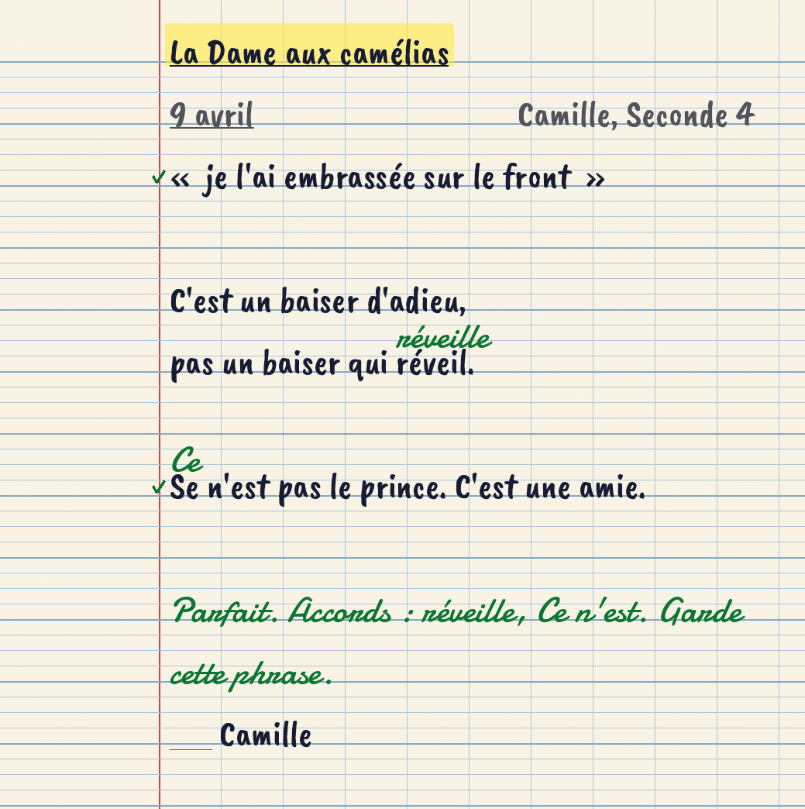
Document 11. Charles Perrault, La Belle au bois dormant, le sommeil qui préserve. Palier 3
Domaine public. Édition Casterman, 1902, Wikisource. Au palier 3, il ne reste que les numéros de lignes. Le but est d’ouvrir l’accès au récit, non de le simplifier ; le marchepied s’efface, le texte demeure entier.
| Ligne | Texte |
|---|---|
| 1 | Alors le roi et la reine, après avoir baisé leur chère enfant |
| 2 | sans qu’elle s’éveillât, sortirent du château, et firent publier |
| 3 | des défenses à qui que ce soit d’en approcher. |
On projette la gravure de Gustave Doré : le prince s’avance dans une allée d’arbres, vers un escalier où la lumière s’ouvre. Le chemin est sombre, mais le centre est clair. Eva dit : « On va arriver. » Oui, chez Perrault, on arrive, au temps fixé. Chez Dumas fils, le temps, lui, ne préserve pas.
Document 12. Alexandre Dumas fils, La Dame aux camélias, chapitre XXVI, journal de Julie Duprat, puis chapitre XXVII. Palier 3
Domaine public. Texte confronté à l’édition Lévy, 1852, sur Wikisource. Deux passages continus, exacts. Les numéros de lignes suffisent. Une seule glose, au passage, si un mot arrête encore.
Le baiser trop tard
Qui embrasse Marguerite, et à quel moment ?
| Ligne | Texte |
|---|---|
| 1 | Deux ou trois fois aussi, elle a dit votre nom, puis tout s’est |
| 2 | tu, elle est retombée épuisée sur son lit. Des larmes silencieuses |
| 3 | ont coulé de ses yeux, et elle est morte. |
| 4 | Alors, je me suis approchée d’elle, je l’ai appelée, et comme |
| 5 | elle ne me répondait pas, je lui ai fermé les yeux, et je l’ai |
| 6 | embrassée sur le front. |
| 7 | Pauvre chère Marguerite, j’aurais voulu être une sainte femme, |
| 8 | pour que ce baiser te recommandât à Dieu. |
Les premières feuilles
Quelle lumière le récit laisse-t-il, après tout ?
| Ligne | Texte |
|---|---|
| 9 | Enfin, nous allâmes à la tombe de Marguerite sur laquelle les |
| 10 | premiers rayons du soleil d’avril faisaient éclore les premières |
| 11 | feuilles. |
Nathan, très bas : « Elle a dit le nom. Comme on dit le nom dans un conte, pour réveiller. Mais rien ne se lève. » Hugo veut lire le baiser. Il le lit bien, sans forcer. Sami, qui a choisi La Dame aux camélias en cursive, dit : « Le père d’Armand a brisé l’amour qui pouvait encore la sauver. C’est ça, le point de bascule. Le sommeil, ensuite, n’est plus un sommeil. » Je confirme, sans ouvrir les pages les plus dures : le sacrifice imposé par M. Duval est le point d’inversion. Aujourd’hui, nous en voyons l’arrivée.
Je rappelle, en une phrase seulement, une ironie du chapitre XXVII : après la mort, il est encore question d’argent, de billets, de dettes. Le titre de notre séquence n’était pas une boutade. Puis nous allons vers la lumière d’avril, et nous y restons.
Document 13. Histoire des arts. Doré et Courbet
On pose, l’une à côté de l’autre, deux images lumineuses.
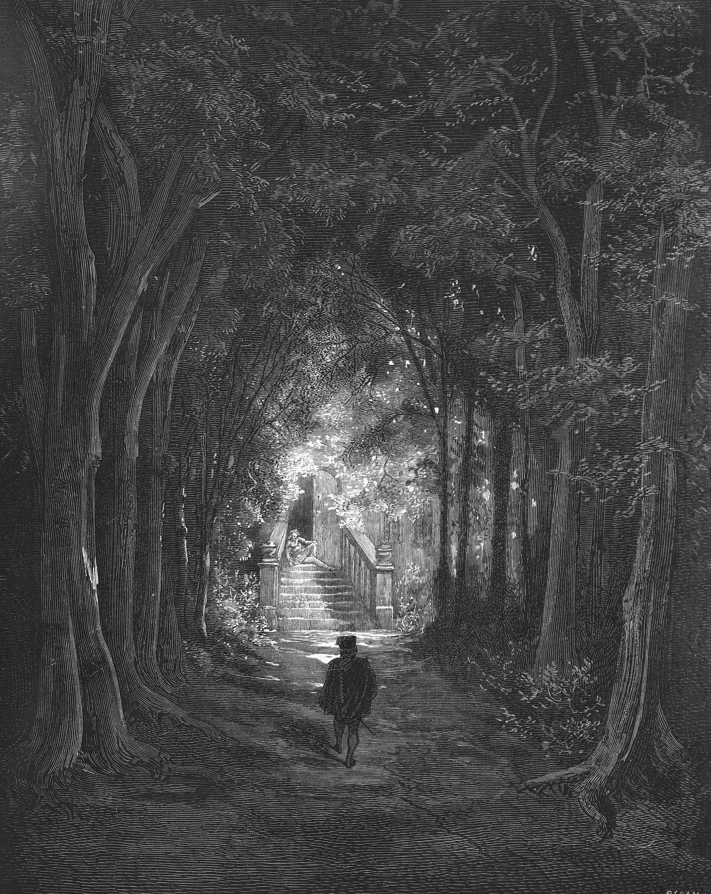
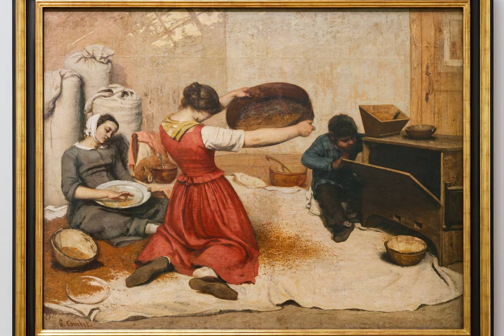
À gauche, Gustave Doré, le prince s’avançant vers le château de la Belle au bois dormant, gravure pour Les Contes de Perrault. L’allée se resserre, puis s’ouvre : le regard monte vers un escalier, vers une clarté. C’est un merveilleux encore vertical. On pourrait aussi rouvrir le bal de Cendrillon, gravé par le même Doré : lustre, cercle des danseurs, la jeune fille au centre, le palais tient encore.
À droite, Gustave Courbet, Les Cribleuses de blé, 1854, musée des Beaux-Arts de Nantes, domaine public. Une pièce claire, un mur où passe le jour, trois figures au travail, un geste large, du grain sur le drap. Rien de féerique. Rien de laid non plus : une lumière de travail, une composition d’abord horizontale. Le réel suffit.
Je nomme, sans les projeter, deux autres toiles de Courbet que le dossier peut convoquer pour la démonstration : Un enterrement à Ornans, dont l’horizontalité lourde refuse toute échappée vers le ciel, et Les Casseurs de pierres, œuvre détruite en 1945, que nous ne pouvons plus montrer. Nous travaillons sur Les Cribleuses de blé, qui dit assez le refus du merveilleux, et qui reste belle à regarder longtemps.
Eva, qui regardait déjà Tissot à la leçon 2, dit : « Chez Doré, on lève les yeux. Chez Courbet, on reste à hauteur du grain. » Yanis traduit : « Spirale centripète, encore, dans la gravure : tout conduit au centre clair. Chez Courbet, plus de centre magique. Le travail est là, à plat, dans le jour. » Théo, pour une fois, n’oppose rien. Il demande seulement : « Est-ce que Courbet est cruel ? » Je réponds : non, pas dans cette toile. Il est exact. Le réalisme n’est pas une grimace. C’est une façon de garder les yeux ouverts.
Spirale de Gorse. Marguerite, et le passage des images
| Tour | Je… | Question | Je regarde (à l’intérieur : le document) |
|---|---|---|---|
| Tour 1 | Je repère | Quelle attente de conte porte encore le journal ? | Elle « a dit votre nom », comme on appelle celui qui doit venir |
| Tour 2 | J’identifie | Où le réveil n’a pas lieu ? | « tout s’est tu », « elle est morte », le baiser vient après |
| Tour 3 | Je mesure | Qui embrasse, et que peut encore ce baiser ? | Julie, « sur le front », « pour que ce baiser te recommandât à Dieu » |
| Tour 4 | Je formule | Comment Dumas fils inverse-t-il La Belle au bois dormant, et comment l’image quitte-t-elle Doré pour Courbet ? | Le sommeil qui ne préserve plus ; l’allée verticale, puis l’horizontalité du travail |
| Tour 5 | Je trouve le sens | Thèse et limite | Le document tout entier, et les deux images |
Contrôle rapide de formation
En une phrase : ce baiser, que fait-il, que ne fait-il pas ?
Trace écrite (ce qui entre dans le cahier)
Chez Perrault, les parents baisent l’enfant « sans qu’elle s’éveillât » : le sommeil préserve, un prince viendra. Chez Dumas fils, Marguerite dit le nom d’Armand, « puis tout s’est tu ». Julie lui ferme les yeux et l’embrasse « sur le front » : baiser trop tard, baiser d’amie, non de prince. Ensuite, « les premiers rayons du soleil d’avril faisaient éclore les premières feuilles ». En image, Doré ouvre encore une allée vers un palais ; Courbet, dans Les Cribleuses de blé, garde les figures à hauteur du travail et du jour. Thèse : le XIXe siècle retire la Providence, et laisse parfois une tendresse humaine. Formules utiles : « je l’ai embrassée sur le front » ; « les premiers rayons du soleil d’avril ».
Devoirs
Copier exactement les lignes 4 à 8 et 9 à 11. Rédiger le paragraphe d’histoire des arts (dix lignes), si le complément n’a pas suffi. Apporter, pour l’atelier, les cinq spirales de la séquence, au propre.
Leçon 6. Atelier : physique des récits et plan de commentaire
Compétences travaillées : production écrite, production orale, compréhension écrite, compréhension orale.
Durée : 55 minutes, minutées sur 52 minutes. Les minutes 52 à 55 sont gardées comme marge de sécurité.
À la fin de cette leçon, je peux : tracer, sur une même feuille, les cinq trajectoires du corpus ; passer d’une Spirale de Gorse à un plan détaillé de commentaire composé, prêt pour le devoir.
Question du jour : Comment passe-t-on de la pointe de la spirale à un plan en deux axes, sans perdre les preuves ?
Mise en route
À l’arrivée, pendant l’appel :
Dans votre cahier de brouillon, sur la feuille déjà préparée (cinq colonnes : Mathilde, Emma, Nana, Lucien, Marguerite), inscrivez, pour un seul personnage de votre choix, les trois mentions suivantes : le conte détourné, le point de bascule, un objet du texte (collier, soulier, mouche, cailloux, baiser). Vous avez le droit d’ouvrir votre cahier.
Écrivez d’abord dans votre cahier de brouillon, puis venez au tableau chacun votre tour.
Lignes à tracer au tableau :
Louise choisit Mathilde, et écrit « rivière fausse ». Yanis veut tout faire, je le retiens : un seul personnage, pour commencer. Sami a déjà noté, pour Marguerite, « baiser trop tard ». Le moteur est chaud. L’atelier peut partir.
Yanis, lui, tient déjà la physique des récits. Voici sa spirale, commencée dans le cahier de brouillon.
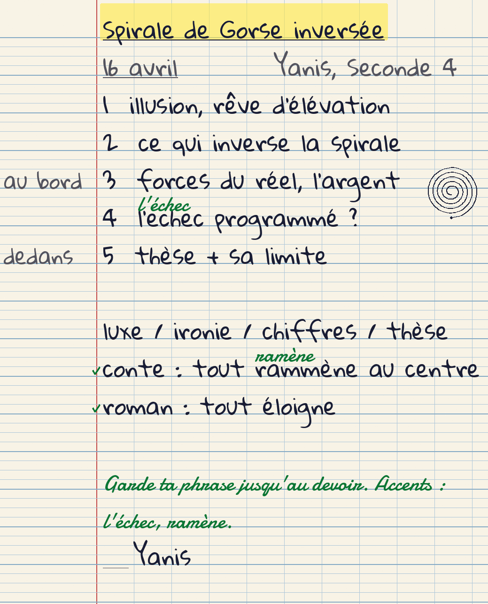
Document 14. Tableau de synthèse, à compléter
| Personnage | Conte | Force motrice du roman | Point de bascule | Objet qui reste | Centre (thèse, en une phrase) |
|---|---|---|---|---|---|
| Mathilde | Cendrillon | L’argent, les apparences | La perte de la rivière | Le collier faux, les mains rouges | On ne change pas de classe par magie |
| Emma | Cendrillon et Blanche-Neige | Le rêve à crédit | Le retour du bal, puis la poudre | Les souliers jaunis, le petit soulier de Berthe | Aucun baiser ne sauve du romantisme naïf |
| Nana | Le Petit Chaperon rouge | Hérédité, appétits d’un Empire | L’entrée dans les palais | La mouche couleur de soleil | La proie devient une force, sans le vouloir |
| Lucien | Le Petit Poucet | Presse, argent, ambition | Lâcher d’Arthez, suivre Lousteau | L’argent semé, la chambre sans soleil | Le talent sans morale est broyé, et il a lâché les cailloux |
| Marguerite | La Belle au bois dormant | Le regard social, le temps qui use | Le sacrifice imposé par le père | Le baiser au front, le soleil d’avril | Le réveil n’a pas lieu ; une tendresse humaine demeure |
À l’oral, chaque binôme présente une ligne du tableau, en trente secondes, avec une citation. Minuteur visible. Léo se trompe et donne à Nana la pantoufle : la classe le reprend, sans cruauté, et il corrige. Ils ont horreur de l’incohérence, et c’est tant mieux : la correction vient d’eux.
De la spirale au plan de commentaire
On part d’un centre déjà trouvé, celui de La Parure ou celui du texte de Flaubert donné au devoir (I, 6, les lectures d’Emma au couvent). Règle simple, écrite au tableau, en vert :
- Le tour 4 devient la question introductive.
- Les tours 1 à 3 fournissent les arguments et les citations, répartis en deux axes.
- Le tour 5 fournit la thèse, dès l’introduction, et la limite, en ouverture de la conclusion.
Pour le sujet A du devoir, les deux axes sont déjà donnés : I. L’accumulation des clichés du conte et du roman merveilleux. II. La mise à distance ironique du narrateur. On s’entraîne, aujourd’hui, à placer sous chaque axe trois preuves exactes, puis à écrire l’idée du tour 5.
Chloé veut commencer par « c’est ironique ». Aïcha l’arrête : « D’abord les mots, ensuite l’ironie. » C’est exactement l’ordre de la spirale, du premier tour vers la pointe. Je n’ai rien à ajouter.
Trace écrite (ce qui entre dans le cahier)
Les cinq récits suivent une spirale centrifuge : l’argent, le rêve, l’hérédité, la presse, le temps social remplacent la magie. Pour passer au commentaire : le tour 4 devient la question, les tours 1 à 3 deviennent les axes et les citations, le tour 5 donne la thèse et la limite. Le devoir durera 2 heures : 30 minutes de spirale au brouillon, 1 h 30 de rédaction, sujet A ou sujet B. Formules utiles : « le tour 4 devient la question » ; « la limite s’écrit en conclusion, sans détruire la thèse ».
Devoirs
Apporter, le jour de l’évaluation, un stylo, le brouillon sera fourni et rendu avec la copie. Relire les cinq traces écrites. Pour l’oral de cursive, préparer en dix lignes : l’œuvre lue, le conte qu’elle détourne, une citation, et le pourquoi.
Évaluation écrite sommative (2 heures)
Nom : ................................................... Prénom : ................................................... Classe : 2nde ...
Le devoir a lieu en classe, en 2 heures. Les minutes sont visibles. On compose sans aide, et l’on note l’heure de début et l’heure de fin.
Étape 1 obligatoire (30 minutes, sur feuille de brouillon à rendre avec la copie, 4 points). Réalisez la Spirale de Gorse du texte choisi (Sujet A) ou de votre projet d’écriture (Sujet B), en faisant apparaître clairement les cinq tours : idées et forces narratives à l’extérieur, citations ou procédés à l’intérieur, problématique au tour 4, thèse et limite au centre.
Étape 2. Traitez au choix le Sujet A ou le Sujet B (1 h 30, 16 points).
Sujet A. Commentaire littéraire guidé (Gustave Flaubert, Madame Bovary, I, 6)
Emma, jeune fille élevée au couvent, dévore en cachette des romans sentimentaux et historiques qui façonnent sa vision du monde.
Domaine public. Texte confronté à l’édition Conard, 1910, d’après le texte de 1857, sur Wikisource. Le passage est donné entier, sans coupure. On copie « Ce n’était » au singulier, comme dans cette édition.
| Ligne | Texte |
|---|---|
| 1 | Ce n’était qu’amours, amants, amantes, dames persécutées |
| 2 | s’évanouissant dans des pavillons solitaires, postillons qu’on |
| 3 | tue à tous les relais, chevaux qu’on crève à toutes les pages, |
| 4 | forêts sombres, troubles du cœur, serments, sanglots, larmes |
| 5 | et baisers, nacelles au clair de lune, rossignols dans les |
| 6 | bosquets, messieurs braves comme des lions, doux comme des |
| 7 | agneaux, vertueux comme on ne l’est pas, toujours bien mis, et |
| 8 | qui pleurent comme des urnes. Pendant six mois, à quinze ans, |
| 9 | Emma se graissa donc les mains à cette poussière des vieux |
| 10 | cabinets de lecture. Avec Walter Scott, plus tard, elle s’éprit |
| 11 | de choses historiques, rêva bahuts, salle des gardes et |
| 12 | ménestrels. Elle aurait voulu vivre dans quelque vieux manoir, |
| 13 | comme ces châtelaines au long corsage, qui, sous le trèfle des |
| 14 | ogives, passaient leurs jours, le coude sur la pierre et le |
| 15 | menton dans la main, à regarder venir du fond de la campagne |
| 16 | un cavalier à plume blanche qui galope sur un cheval noir. |
Consigne. Rédigez un commentaire composé organisé en deux grandes parties, en vous appuyant sur votre Spirale de Gorse.
- L’accumulation des clichés du conte et du roman merveilleux : comment Flaubert reconstitue l’univers idéalisé et stéréotypé dont s’abreuve Emma.
- La mise à distance ironique du narrateur : comment l’écriture réaliste dénonce déjà l’empoisonnement par la fiction et annonce la spirale descendante d’Emma.
Sujet B. Écriture d’appropriation et justification
Choisissez un conte merveilleux célèbre (La Belle et la Bête, Barbe-Bleue, Peau d’Âne ou Hansel et Gretel). Réécrivez son dénouement (350 à 450 mots) en adoptant l’esthétique réaliste ou naturaliste du XIXe siècle, à la manière de Maupassant ou de Zola. La magie doit disparaître au profit du déterminisme social, financier ou biologique, inversant la spirale ascendante du conte en chute tragique ou ironique.
Vous accompagnerez votre texte d’un paragraphe explicatif (dix lignes) justifiant vos choix d’écriture.
Évaluation orale sommative. Lecture cursive
Durée : 8 à 10 minutes par élève, dont 1 minute 30 à 2 minutes de présentation continue, puis un court échange. Minuteur visible. Les lectures cursives recommandées, au choix, sont : Guy de Maupassant, Pierre et Jean ou Une vie ; Émile Zola, Au Bonheur des Dames (l’exception d’une spirale ascendante maîtrisée) ou La Curée ; Honoré de Balzac, Le Père Goriot ; et, en prolongement contemporain, Angela Carter, La Compagnie des loups. On peut aussi soutenir l’oral à partir d’une œuvre du groupement déjà lue en entier, notamment La Parure ou La Dame aux camélias.
Consigne. Présentez l’œuvre que vous avez lue. Dites quel conte elle détourne, ou quelle spirale elle suit, et pourquoi. Appuyez-vous sur une citation exacte, courte, et sur un objet ou un point de bascule. Vous pouvez vous aider d’une Spirale de Gorse de cinq tours, apportée au brouillon.
Itinéraires et destinations
Le printemps a avancé. La dernière heure de la séquence, celle de l’atelier, s’est achevée sans éclat, comme s’achèvent souvent les vraies heures de classe : un cahier refermé, une chaise rentrée, un soleil déjà plus haut sur la cour.
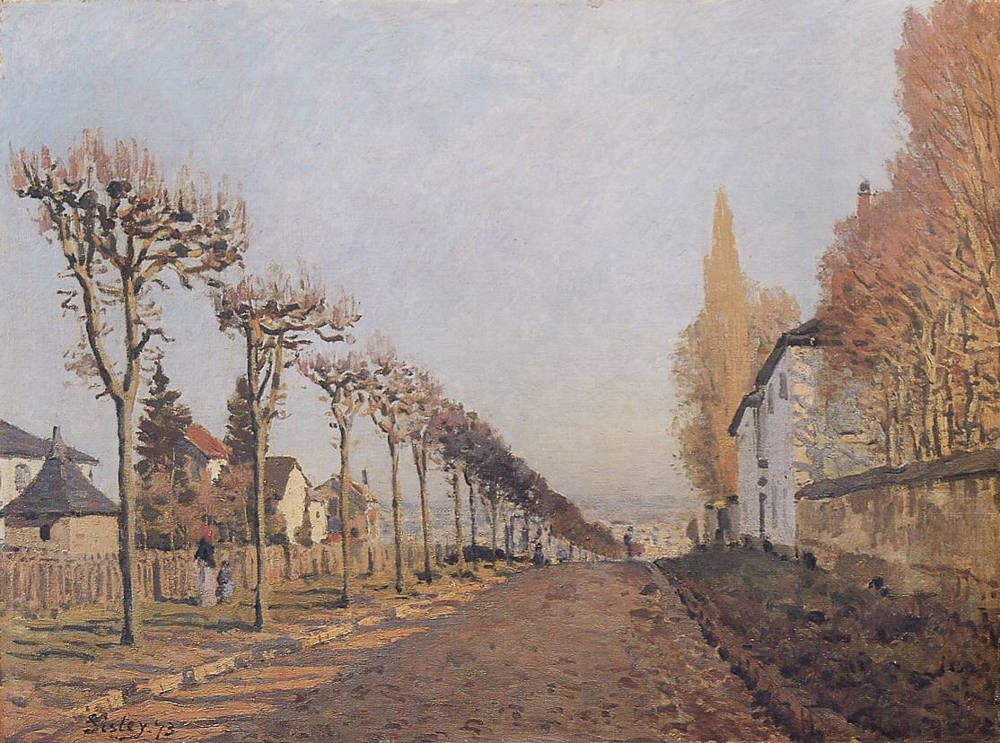
J’ai laissé, ce jour-là, au tableau, la toile d’Alfred Sisley, Le Chemin de la Machine, Louveciennes, 1873, musée d’Orsay, domaine public. Une route claire, des arbres, quelques figures très petites, et, au bout, la lumière d’un ciel vaste. Rien de féerique. Rien de triste. Un chemin. Des gens qui marchent.
Yanis a dit : « C’est une trajectoire, mais elle ne chute pas. » Inès a ajouté : « On ne voit pas le château. On voit qu’on avance. » Nathan, encore une fois, a cherché la limite : « On n’a pas tout lu. On a appris à lire ce qui tourne. » Théo n’a rien objecté. Camille a recopié, dans le cahier, une seule phrase de la trace du jour. Hugo, en partant, a regardé la route de Sisley plus longtemps que le reste.
Ce livre s’appelait Grand Tour, avec ce sous-titre : Itinéraires et destinations. On y a voyagé longtemps, d’une langue à l’autre, d’un siècle à l’autre, d’une image à un texte. Cette séquence n’ajoute pas une étape pour le plaisir d’en ajouter une. Elle referme le voyage là où il devait se refermer : dans une classe, au travail, avec des prénoms inventés et des phrases exactes.
L’itinéraire, c’était la méthode. Une mise en route écrite en rouge, la même, à la même place, pendant l’appel. Cinquante-deux minutes utiles, et trois minutes pour que rien ne se perde. Une spirale, cinq tours, des idées à l’extérieur, les mots du texte à l’intérieur, une thèse et une limite au centre. Des tableaux à onglets, un Plan B qui remplace et n’ajoute pas, un marchepied qui s’efface du palier 1 au palier 3, sans jamais simplifier le récit.
La destination, ce n’était pas un palais. C’était ceci : partir d’un conte que l’on croyait connaître, et arriver, plus riche, du côté du roman qui le retourne. Voir Mathilde vieillir pour un collier faux, Emma ranger des souliers jaunis, Nana entrer par les fenêtres des palais, Lucien semer son argent sur la route, Julie embrasser un front trop tard, et, malgré tout, le soleil d’avril faire éclore les premières feuilles. Distinguer ce que le texte dit et ce que nous comparons. Garder une citation exacte. Oser une limite.
Ils sont sortis plus riches de savoir, non parce qu’on leur avait tout donné, mais parce qu’ils avaient traversé le chemin, et qu’ils savaient désormais comment un récit tourne, et comment on en rend compte. Le Grand Tour s’achève ici. La route, elle, continue, comme sur la toile de Sisley, claire, ouverte, et sans fée.
Sources des textes et des images
Tous les extraits littéraires ont été confrontés à une édition du domaine public, sur Wikisource, et sont reproduits exacts, sans coupure à l’intérieur du passage retenu.
- Guy de Maupassant, La Parure, dans Contes du jour et de la nuit, C. Marpon et E. Flammarion, 1885, p. 73-93. Wikisource : « Contes du jour et de la nuit (éd. Flammarion, 1885)/La Parure ».
- Charles Perrault, Cendrillon ou la petite Pantoufle de verre, Le Petit Chaperon rouge, Le Petit Poucet, La Belle au bois dormant, dans Contes de Perrault (éd. 1902), Casterman, Tournai, 1902. Wikisource.
- Gustave Flaubert, Madame Bovary, première partie, chapitres 6 et 8, et troisième partie, chapitre 8, édition Conard, 1910, d’après le texte de 1857. Wikisource : « Madame Bovary/Première partie/6 », « Madame Bovary/Première partie/8 », « Madame Bovary/Troisième partie/08 ». Dans cette édition, on lit « Ce n’était qu’amours » (et non « Ce n’étaient »).
- Émile Zola, Nana, chapitre 7, la chronique intitulée « la Mouche d’Or ». Wikisource : « Nana/Chapitre 7 ».
- Honoré de Balzac, Illusions perdues, deuxième partie, Un grand homme de province à Paris, Vve A. Houssiaux, 1874, tome 8. Wikisource : « Illusions perdues/Un grand homme de province à Paris ». Aucun passage du Père Goriot n’est repris ici.
- Alexandre Dumas fils, La Dame aux camélias, chapitres XXVI et XXVII, édition Lévy, 1852. Wikisource : « La Dame aux camélias/XXVI » et « La Dame aux camélias/XXVII ». On a choisi le journal de Julie et le soleil d’avril, non la visite du père, déjà travaillée ailleurs dans ce livre.
Images, toutes du domaine public, lumineuses, non reprises d’un autre chapitre de ce livre :
- James Tissot, Too Early, 1873, huile sur toile, Guildhall Art Gallery, Londres. Wikimedia Commons, fichier « James Tissot - Too Early.jpg ». En ouverture de séquence, le salon avant le bal.
- Gustave Doré, Cendrillon au bal, gravure pour Les Contes de Perrault, Paris, 1867. Wikimedia Commons, fichier « Les contes de Perrault 1867 (136548285).jpg » et variante « Cinderella by Gustav Dore (136548285).jpg ».
- Gustave Doré, Le Petit Poucet ramassant les cailloux blancs au bord de l’eau. Wikimedia Commons, fichier « Le Petit Poucet (136547691).jpg ». Une autre gravure, les enfants sur le chemin, fichier « Le Petit Poucet (136547739).jpg », peut accompagner la leçon 4.
- Gustave Doré, La Belle au bois dormant, le prince s’avançant vers l’escalier de lumière. Wikimedia Commons, fichier « La Belle au Bois Dormant (136548149).jpg ».
- Gustave Courbet, Les Cribleuses de blé, 1854, huile sur toile, musée des Beaux-Arts de Nantes. Wikimedia Commons, fichier « Gustave Courbet 014.jpg ». Un enterrement à Ornans et Les Casseurs de pierres sont nommés dans la leçon, non reproduits : le premier pour son horizontalité, le second parce que l’œuvre a été détruite en 1945. On n’a pas repris Le Désespéré, déjà présent dans le livre.
- Alfred Sisley, Le Chemin de la Machine, Louveciennes, 1873, huile sur toile, musée d’Orsay, Paris. Wikimedia Commons, fichier « Sisley-Chemin de la Machine Louveciennes.jpg ». En clôture du livre, la route et la destination.